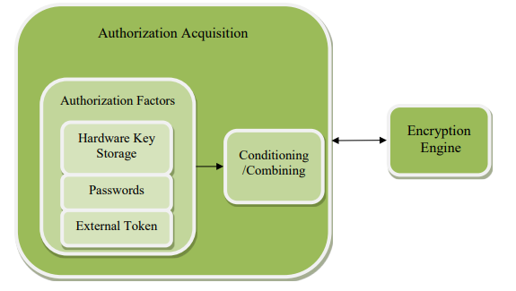

The purpose of the first set of Collaborative Protection Profiles (cPPs) for Full Drive Encryption (FDE): Authorization Acquisition (AA) and Encryption Engine (EE) is to provide requirements for Data-at-Rest protection for a lost device that contains storage. These cPPs allow FDE solutions based in software and/or hardware to meet the requirements. The form factor for a storage device may vary, but could include: system hard drives/solid state drives in servers, workstations, laptops, mobile devices, tablets, and external media. A hardware solution could be a Self-Encrypting Drive or other hardware-based solutions; the interface (USB, SATA, etc.) used to connect the storage device to the host machine is outside the scope of this cPP.
Full Drive Encryption encrypts all data (with certain exceptions) on the storage device and permits access to the data only after successful authorization to the FDE solution. The exceptions include the necessity to leave a portion of the storage device (the size may vary based on implementation) unencrypted for such things as the Master Boot Record (MBR) or other AA/EE pre-authentication software. These FDEcPPs interpret the term “full drive encryption” to allow FDE solutions to leave a portion of the storage device unencrypted so long as it contains plaintext user or plaintext authorization data.
Since the FDEcPPs support a variety of solutions, two cPPs describe the requirements for the FDE components shown in Figure 1.
The FDEcPP - Authorization Acquisition describes the requirements for the Authorization Acquisition piece and details the security requirements and assurance activities necessary to interact with a user and result in the availability of sending a Border Encryption Value (BEV)to the Encryption Engine.
The FDEcPP - Encryption Engine describes the requirements for the Encryption Engine piece and details the necessary security requirements and assurance activities for the actual encryption/decryption of the data by the DEK. Each cPP will also have a set of core requirements for management functions, proper handling of cryptographic keys, updates performed in a trusted manner, audit and self-tests.
This TOE description defines the scope and functionality of the Authorization Acquisition, and
the Security Problem Definition describes the assumptions made about the operating
environment and the threats to the AA that the cPP requirements address
1.2 Terms
The following sections list Common Criteria and technology terms used in this document.
1.2.1 Common Criteria Terms
Assurance
Grounds for confidence that a TOE meets the SFRs [CC].
Base Protection Profile (Base-PP)
Protection Profile used as a basis to build a PP-Configuration.
Collaborative Protection Profile (cPP)
A Protection Profile developed by
international technical communities and approved by multiple schemes.
Common Criteria (CC)
Common Criteria for Information Technology Security Evaluation (International Standard ISO/IEC 15408).
Common Criteria Testing Laboratory
Within the context of the Common Criteria Evaluation and Validation Scheme (CCEVS), an IT security evaluation facility
accredited by the National Voluntary Laboratory Accreditation Program (NVLAP) and approved by the NIAP Validation Body to conduct Common Criteria-based evaluations.
Common Evaluation Methodology (CEM)
Common Evaluation Methodology for Information Technology Security Evaluation.
Extended Package (EP)
A deprecated document form for collecting SFRs that implement a particular protocol, technology,
or functionality. See Functional Packages.
Functional Package (FP)
A document that collects SFRs for a particular protocol, technology,
or functionality.
Operational Environment (OE)
Hardware and software that are outside the TOE boundary that support the TOE functionality and security policy.
Protection Profile (PP)
An implementation-independent set of security requirements for a category of products.
The security functionality of the product under evaluation.
TOE Summary Specification (TSS)
A description of how a TOE satisfies the SFRs in an ST.
1.2.2 Technical Terms
Assurance
Grounds for confidence that a TOE meets the SFRs [CC1].
Authorization Factor
A value that a user knows, has, or is (e.g. password, token, etc.)
submitted to the TOE to establish that the user is in the community
authorized to use the hard disk. This value is used in the derivation or
decryption of the BEV and eventual decryption of the DEK. Note
that these values may or may not be used to establish the particular
identity of the user.
Border Encryption Valu (BEV)
A value passed from the AA to the EE intended to link the key chains
of the two components.
Refers to partitions of logical blocks of user accessible data as
managed by the host system that indexes and partitions and an
operating system that maps authorization to read or write data to blocks
in these partitions. For the sake of this Security Program Definition
(SPD) and cPP, FDE performs encryption and authorization on one
partition, so defined and supported by the OS and file system jointly,
under consideration. FDE products encrypt all data (with certain
exceptions) on the partition of the storage device and permits access to
the data only after successful authorization to the FDE solution. The
exceptions include the necessity to leave a portion of the storage device
(the size may vary based on implementation) unencrypted for such
things as the Master Boot Record (MBR) or other AA/EE preauthentication software. These FDE cPPs interpret the term “full drive
encryption” to allow FDE solutions to leave a portion of the storage
device unencrypted so long as it contains no protected data.
Host Platform
The local hardware and software the TOE is running on, and does not
include any peripheral devices (e.g. USB devices) that may be
connected to the local hardware and software.
Intermediate Key
A key used in a point between the initial user authorization and the
DEK.
Key Chaining
The method of using multiple layers of encryption keys to protect data. A top layer key encrypts a lower layer key which encrypts the data;
this method can have any number of layers.
Key Encryption Key (KEK)
A key used to encrypt other keys, such as DEKs or storage that
contains keys.
Key Material
Key material is commonly known as critical security parameter (CSP)
data, and also includes authorization data, nonces, and metadata.
Key Release Key (KRK)
A key used to release another key from storage, it is not used for the
direct derivation or decryption of another key.
Key Sanitization
A method of sanitizing encrypted data by securely overwriting the key
that was encrypting the data.
Non-Volatile Memory
A type of computer memory that will retain information without
power.
Operating System (OS)
Software which runs at the highest privilege level and can directly
control hardware resources.
This refers to all data on the storage device with the exception of a
small portion required for the TOE to function correctly. It is all space
on the disk a user could write data to and includes the operating
system, applications, and user data. Protected data does not include the
Master Boot Record or Pre-authentication area of the drive – areas of
the drive that are necessarily unencrypted.
Submask
A submask is a bit string that can be generated and stored in a number
of ways.
Target of Evaluation (TOE)
A set of software, firmware and/or hardware possibly accompanied by
guidance. [CC1]
1.3 Implementation
Full Drive Encryption solutions vary with implementation and vendor combinations.
Therefore, vendors will evaluate products that provide both components of the Full Disk
Encryption Solution (AA and EE) against both cPPs – could be done in a single evaluation
with one ST. A vendor that provides a single component of a FDE solution would only evaluate
against the applicable cPP. The FDEcPP is divided into two documents to allow labs to
independently evaluate solutions tailored to one cPP or the other. When a customer acquires
an FDE solution, they will either obtain a single vendor product that meets the AA + EEcPPs
or two products, one of which meets the AA and the other of which meets the EEcPPs.
The table below illustrates a few examples for certification
A single vendor’s combination of hardware (e.g. hardware encryption engine, cryptographic co-processor) and software
1.4 TOE Overview
The Target of Evaluation (TOE) for this cPP (Authorization Acquisition) may be either a Host software solution that manages a HW Encryption Engine (e.g. a SED) or as part of a combined evaluation of this cPP and the Encryption Engine cPP for a vendor that is providing a solution that includes both components.
The following sections provide an overview of the functionality of the FDEAA as well as the security capabilities.
1.4.1 Authorization Acquisition Introduction
The Authorization Acquisition sends a Border Encryption Value (BEV), which could be a Key Encryption Key (KEK), a Key Releasing Key (KRK), or some other type of key to the Encryption Engine. The EE does not have to use this value directly as the key to decrypt or release the DEK. It may use it as part of a scheme that uses other intermediate keys to eventually protect the DEK. A KEK wraps other keys, notably the DEK or other intermediary keys which chain to the DEK. Key Releasing Keys (KRKs) authorize the EE to release either the DEK or other intermediary keys which chain to the DEK. Figure 2 illustrates the components within AA and its relationship with EE.
Authorization factors may be unique to individual users or may be used by a group of individuals. In other words, the EE requires authorization factors from the AA to establish that the possessor of the authorization factor belongs to the community of users authorized to access information stored on the storage device (and does not require specific user authorization). Examples of authorization factors include, but are not limited to, passwords, passphrases, or randomly generated values stored on USB tokens or a pin to release a key on hardware storage media such as a Trusted Platform Module (TPM).
1.4.1.1 TOE Boundary
 Figure 2:
Authorization Acquisition Details
Authorization factors may be unique to individual users or may be used by a group of individuals. In other words, the EE requires authorization factors from the AA to establish that the possessor of the authorization factor belongs to the community of users authorized to access information stored on the storage device (and does not require specific user authorization). Examples of authorization factors include, but are not limited to, passwords, passphrases, or randomly generated values stored on USB tokens or a pin to release a key on hardware storage media such as a Trusted Platform Module (TPM).
The AA collects authorization factors which the EE uses to access data on the storage device and perform a variety of management functions. Depending on the type of authorization factor, the AA may condition them further. For example, it may apply an approved password-based key derivation function (e.g. PBKDF2) on passwords. An external token containing a randomly generated value of sufficient strength may require no further conditioning on the authorization factors. The AA may then combine one or more authorization factors in such a way that maintains the strength of both factors.
The AA serves as the main management interface to the EE. However, the EE may also offer management functionality. The requirements in the EEcPP address how the EE should handle these features. The management functionality may include the ability to send commands to the EE such as changing a DEK, setting up new users, managing KEKs and other intermediate keys, and performing a key sanitization (e.g. overwrite of the DEK). It may also forward commands that partition the drive for use by multiple users. However, this document defers the management of partitions and assumes that administrators will only provision and manage the data on whole drives.
1.4.3 Interface/Boundary
The interface and boundary between the AA and the EE will vary based on the implementation. If one vendor provides the entire FDE solution, then it is may choose to not implement an interface between the AA and EE components. If a vendor provides a solution for one of the components, then the assumptions below state that the channel between the two components is sufficiently secure. Although standards and specifications exist for the interface between AA and EE components, the cPP does not require vendors to follow the standards in this version.
1.5 Compliant Targets of Evaluation
1.5.1 TOE Boundary
The environment in which the AA functions may differ depending on the boot stage of the platform in which it operates, see Figure 3. Depending on the solution’s architecture, aspects of provisioning, initialization, and authorization may be performed in the Pre-Boot environment, while encryption, decryption and management functionality are likely performed in the Operating System environment. In non-software solutions, encryption/decryption starts in Pre30 OS environment and continues into OS present environment.
In the Operating System environment, the Authorization Acquisition has the full range of services available from the operating system (OS), including hardware drivers, cryptographic libraries, and perhaps other services external to the TOE.
The Pre-Boot environment is much more constrained with limited capabilities. This environment turns on the minimum number of peripherals and loads only those drivers necessary to bring the platform from a cold start to executing a fully functional operating system with running applications.
The AATOE may include or leverage features and functions within the operational environment.
Figure 3:
Operational Environment
1.6 Use Cases
The use case for a product conforming to the FDEcPPs is to protect data at rest on a device that is lost or stolen while powered off without any prior access by an adversary. The use case where an adversary obtains a device that is in a powered state and is able to make modifications to the environment or the TOE itself (e.g., evil maid attacks) is not addressed by these cPPs (i.e., FDE-AA and FDE- EE).
The evaluation methods used for evaluating the TOE are a combination of the workunits
defined in [CEM] as well as the Evaluation Activities for ensuring that individual SFRs
and SARs have a sufficient level of supporting evidence in the Security Target and guidance
documentation and have been sufficiently tested by the laboratory as part of completing
ATE_IND.1. Any functional packages this PP claims similarly contain their own Evaluation
Activities that are used in this same manner.
CC Conformance Claims
This PP is conformant to
Part 2 (extended)
and Part 3 (conformant)
of Common Criteria CC:2022, Revision 1.
PP Claim
This PP does not claim conformance to
any Protection Profile.
The following PPs and PP-Modules are allowed to be specified in a
PP-Configuration with this PP:
PP-Module for File Encryption Enterprise Management Version 1.0
Package Claim
This PP is not conformant to any
Functional or Assurance Packages.
3 Security Problem Definition
3.1 Threats
This section provides a narrative that describes how the requirements mitigate the mapped threats. A requirement may mitigate aspects of multiple threats. A requirement may only mitigate a threat in a limited way. Some requirements are optional, either because the TSF fully mitigates the threat without the additional requirement(s) being claimed or because the TSF relies on its Operational Environment to provide the functionality that is described by the optional requirement(s).
A threat consists of a threat agent, an asset and an adverse action of that threat agent on that asset. The threat agents are the entities that put the assets at risk if an adversary obtains a lost or stolen storage device. Threats drive the functional requirements for the target of evaluation (TOE). For instance, one threat below is T.UNAUTHORIZED_DATA_ACCESS. The threat agent is the possessor (unauthorized user) of a lost or stolen storage device. The asset is the data on the storage device, while the adverse action is to attempt to obtain those data from the storage device. This threat drives the functional requirements for the storage device encryption (TOE) to authorize who can use the TOE to access the hard disk and encrypt/decrypt the data. Since possession of the KEK, DEK, intermediate keys, authorization factors, submasks, and random numbers or any other values that contribute to the creation of keys or authorization factors could allow an unauthorized user to defeat the encryption, this SPD considers key material equivalent to the data in importance and they appear among the other assets addressed below.
It is important to reemphasize at this point that this collaborative Protection Profile does not expect the product (TOE) to defend against the possessor of the lost or stolen hard disk who can introduce malicious code or exploitable hardware components into the Target of Evaluation (TOE) or the Operational Environment. It assumes that the user physically protects the TOE and that the Operational Environment provides sufficient protection against logical attacks. One specific area where a conformant TOE offers some protection is in providing updates to the TOE; other than this area, though, this cPP mandates no other countermeasures. Similarly, these requirements do not address the “lost and found” hard disk problem, where an adversary may have taken the hard disk, compromised the unencrypted portions of the boot device (e.g., MBR, boot partition), and then made it available to be recovered by the original user so that they would execute the compromised code.
T.UNAUTHORIZED_DATA_ACCESS
The cPP addresses the primary threat of unauthorized disclosure of protected data stored on a storage device. If an adversary obtains a lost or stolen storage device (e.g., a storage device contained in a laptop or a portable external storage device), they may attempt to connect a targeted storage device to a host of which they have complete control and have raw access to the storage device (e.g., to specified disk sectors, to specified blocks).
T.KEYING_MATERIAL_COMPROMISE
Possession of any of the keys, authorization factors, submasks, and random numbers or any other values that contribute to the creation of keys or authorization factors could allow an unauthorized user to defeat the encryption. The cPP considers possession of key material of equal importance to the data itself. Threat agents may look for key material in unencrypted sectors of the storage device and on other peripherals in the operating environment (OE), e.g. BIOS configuration, SPI flash.
T.AUTHORIZATION_GUESSING
Threat agents may exercise host software to repeatedly guess authorization factors, such as passwords and PINs. Successful guessing of the authorization factors may cause the TOE to release BEV or otherwise put it in a state in which it discloses protected data to unauthorized users. Please see B.1 of the old PP. B.1 states that this threats need to be included in the ST even though it was already part of the mandatory threat list.
T.KEYSPACE_EXHAUST
Threat agents may perform a cryptographic exhaust against the key space. Poorly chosen encryption algorithms and/or parameters allow attackers to exhaust the key space through brute force and give them unauthorized access to the data.
T.UNAUTHORIZED_UPDATE
Threat agents may attempt to perform an update of the product which compromises the security features of the TOE. Poorly chosen update protocols, signature generation and verification algorithms, and parameters may allow attackers to install software and/or firmware that bypasses the intended security features and provides them unauthorized access to data.
3.2 Assumptions
A.INITIAL_DRIVE_STATE
Users enable Full Drive Encryption on a newly provisioned or initialized storage device free of protected data in areas not targeted for encryption. The cPP does not intend to include requirements to find all the areas on storage devices that potentially contain protected data. In some cases, it may not be possible - for example, data contained in “bad” sectors.
While inadvertent exposure to data contained in bad sectors or un-partitioned space is unlikely, one may use forensics tools to recover data from such areas of the storage device. Consequently, the cPP assumes bad sectors, un-partitioned space, and areas that must contain unencrypted code (e.g., MBR and AA/EE pre-authentication software) contain no protected data.
A.SECURE_STATE
Upon the completion of proper provisioning, the drive is only assumed secure when in a powered off state up until it is powered on and receives initial authorization.
A.TRUSTED_CHANNEL
Communication among and between product components (e.g., AA and EE) is sufficiently protected to prevent information disclosure. In cases in which a single product fulfils both cPPs, then the communication between the components does not extend beyond the boundary of the TOE (e.g., communication path is within the TOE boundary). In cases in which independent products satisfy the requirements of the AA and EE, the physically close proximity of the two products during their operation means that the threat agent has very little opportunity to interpose itself in the channel between the two without the user noticing and taking appropriate actions.
A.TRAINED_USER
Authorized users follow all provided user guidance, including keeping password/passphrases and external tokens securely stored separately from the storage device and/or platform.
A.PLATFORM_STATE
The platform in which the storage device resides (or an external storage device is connected) is free of malware that could interfere with the correct operation of the product.
A.SINGLE_USE_ET
External tokens that contain authorization factors are used for no other purpose than to store the external token authorization factors.
A.POWER_DOWN
The user does not leave the platform and/or storage device unattended until all volatile memory is cleared after a power-off, so memory remnant attacks are infeasible.
Authorized users do not leave the platform and/or storage device in a mode where sensitive information persists in non-volatile storage (e.g., lock screen). Users power the platform and/or storage device down or place it into a power managed state, such as a “hibernation mode”.
A.PASSWORD_STRENGTH
Authorized administrators ensure password/passphrase authorization factors have sufficient strength and entropy to reflect the sensitivity of the data being protected.
A.PLATFORM_I&A
The product does not interfere with or change the normal platform identification and authentication functionality such as the operating system login. It may provide authorization factors to the operating system's login interface, but it will not change or degrade the functionality of the actual interface.
A.STRONG_CRYPTO
All cryptography implemented in the Operational Environment and used by the product meets the requirements listed in the cPP. This includes generation of external token authorization factors by a RBG.
A.PHYSICAL
The platform is assumed to be physically protected in its Operational Environment and not subject to physical attacks that compromise the security and/or interfere with the platform’s correct operation.
3.3 Organizational Security Policies
This document does not define any additional OSPs.
4 Security Objectives
4.1 Security Objectives for the Operational Environment
The Operational Environment of the TOE implements technical and procedural measures to assist the TOE in correctly providing its security functionality. This part wise solution forms the security objectives for the Operational Environment and consists of a set of statements describing the goals that the Operational Environment should achieve.
OE.TRUSTED_CHANNEL
Communication among and between product components (i.e., AA and EE) is sufficiently protected to prevent information disclosure.
Rationale: In situations where there is an opportunity for an adversary to interpose
themselves in the channel between the AA and the EE a trusted channel must be established to prevent exploitation. [A.TRUSTED_CHANNEL] assumes the existence of a trusted channel between the AA and EE, except for when the boundary is within and does not breach the TOE or is in such close proximity that a breach is not possible without detection.
OE.INITIAL_DRIVE_STATE
The OE provides a newly provisioned or initialized storage device free of protected data in areas not targeted for encryption.
Rationale: Since the cPP requires all protected data to encrypted A.INITIAL_DRIVE_STATE assumes that the initial state of the device targeted for FDE is free of protected data in those areas of the drive where encryption will not be invoked (e.g., MBR and AA/EE pre-authentication software). Given this known start state, the product (once installed and operational) ensures partitions of logical blocks of user accessible data is protected.
OE.PASSPHRASE_STRENGTH
An authorized administrator will be responsible for ensuring that the passphrase authorization factor conforms to guidance from the Enterprise using the TOE.
Rationale: Users are properly trained [A.TRAINED_USER] to create authorization
27 factors that conform to administrative guidance.
OE.POWER_DOWN
Volatile memory is cleared after power-off so memory remnant attacks are infeasible.
Rationale: Users are properly trained [A.TRAINED_USER] to not leave the storage device unattended until powered down or placed in a managed power state such as “hibernation mode”. A.POWER_DOWN stipulates that such memory remnant attacks are infeasible given the device is in a powered-down or “hibernation mode” state.
OE.SINGLE_USE_ET
External tokens that contain authorization factors will be used for no
35 other purpose than to store the external token authorization factor.
Rationale: Users are properly trained [A.TRAINED_USER] to use external token authorization factors as intended and for no other purpose.
OE.STRONG_ENVIRONMENT_CRYPTO
The Operating Environment will provide a cryptographic function capability that is commensurate with the requirements and capabilities of the TOE and Appendix AShould we get rid of the referenced Appendix since it does not exist?.
Rationale: All cryptography implemented in the Operational Environment and used by
7 the product meets the requirements listed in this cPP [A.STRONG_CRYPTO].
OE.TRAINED_USERS
Authorized users will be properly trained and follow all guidance for securing the TOE and authorization factors.
Rationale: Users are properly trained [A.TRAINED_USER] to create authorization factors that conform to guidance, not store external token authorization factors with the device, and power down the TOE when required (OE.PLATFORM_STATE) The platform in which the storage device resides (or an external storage device is connected) is free of malware that could interfere with the correct operation of the product.
A platform free of malware [A.PLATFORM_STATE] prevents an attack vector that could potentially interfere with the correct operation of the product.
OE.PLATFORM_STATE
The platform in which the storage device resides (or an external
18 storage device is connected) is free of malware that could interfere with the correct operation
19 of the product.
Rationale: A platform free of malware [A.PLATFORM_STATE] prevents an attack vector that could potentially interfere with the correct operation of the product.
OE.PLATFORM_I&A
The Operational Environment will provide individual user identification and authentication mechanisms that operate independently of the authorization factors used by the TOE.
Rationale: While the product may provide authorization factors to the Operating system's login interface, it must not change or degrade the functionality of the actual interface. A.PLATFORM_I&A requires that the product not interfere or change the normal platform I&A functionality.
OE.PHYSICAL
The Operational Environment will provide a secure physical computing space such than an adversary is not able to make modifications to the environment or to the TOE itself.
Rationale: As stated in section 1.6, the use case for this cPP is to protect data at rest on a device where the adversary receives it in a powered off state and has no prior access.
5 Security Requirements
This chapter describes the security requirements which have to be fulfilled by the product under evaluation. Those requirements comprise functional components from Part 2 and assurance components from Part 3 of
[CC].
The following conventions are used for the completion of operations:
Refinement operation (denoted by bold text or strikethrough
text): Is used to add details to a requirement or to remove part of the requirement that is made irrelevant
through the completion of another operation, and thus further restricts a requirement.
Selection (denoted by italicized text): Is used to select one or more options
provided by the [CC] in stating a requirement.
Assignment operation (denoted by italicized text): Is used to assign a
specific value to an unspecified parameter, such as the length of a password. Showing the
value in square brackets indicates assignment.
Iteration operation: Is indicated by appending the SFR name with a slash and unique identifier
suggesting the purpose of the operation, e.g. "/EXAMPLE1."
5.1 Security Functional Requirements
The individual security functional requirements are specified in the sections below. Based on selections made in these SFRs it will also be necessary to include some of the selection-based SFRs in Appendix BShould we get rid of the referenced Appendix since it does not exist?. Additional optional SFRs may also be adopted from those listed in Appendix AShould we get rid of the referenced Appendix since it does not exist? for those functions that are provided by the TOE instead of its Operational Environment.
The Evaluation Activities defined in [SD] describe actions that the evaluator will take in order to determine compliance of a particular TOE with the SFRs. The content of these Evaluation Activities will therefore provide more insight into deliverables required from TOE Developers.
The TSF shall accept the following authorization factors: [selection:
a submask derived from a password authorization factor conditioned as defined in FCS_PCC_EXT.1,
an external Smartcard factor that is at least the same bit-length as the DEK, and is protecting a submask that is
[selection: generated by the TOE (using the RBG as specified in FCS_RBG_EXT.1), generated by the Host Platform] protected using RSA with key size
[selection: 2048 bits, 3072 bits, 4096 bits], with user presence proved by presentation of the smartcard and
[selection: none, an OE defined PIN, a configurable PIN]
an external USB token factor that is at least the same security strength as the BEV, and is providing a submask generated by the TOE, using the RBG as specified in FCS_RBG_EXT.1,
an external USB token factor that is at least the same security strength as the BEV, and is providing a submask generated by the Host Platform
]
Application
Note:
This requirement specifies what authorization factors the TOE accepts from the user. A password entered by the user is one authorization factor that the TOE must be able to condition, as specified in FCS_PCC_EXT.1. Another option is a smartcard authorization factor, with the differentiating feature being how the value is generated – either by the TOE’s RBG or by the platform. An external USB token may also be used, with the submask value generated either by the TOE’s RBG or by the platform.
The TOE may accept any number of authorization factors, and these are categorized as “submasks”. The ST author selects the authorization factors they support, and there may be multiple methods for a selection.
Use of multiple authorization factors is preferable; if more than one authorization factor is used, the submasks produced must be combined using FCS_SMC_EXT.1 specified in Appendix A.
The evaluator shall first examine the TSS to ensure that the authorization factors
specified in the ST are described. For password-based factors the examination of the
TSS section is performed as part of FCS_PCC_EXT.1 Evaluation Activities. Additionally in this case, the evaluator shall verify that the operational guidance
discusses the characteristics of external authorization factors (e.g., how the
authorization factor must be generated; format(s) or standards that the authorization
factor must meet) that are able to be used by the TOE.
If other authorization factors are specified, then for each factor, the TSS specifies how
the factors are input into the TOE.
Guidance
The evaluator shall verify that the AGD guidance includes instructions for all of the
authorization factors. The AGD will discuss the characteristics of external
authorization factors (e.g., how the authorization factor is generated; format(s) or
standards that the authorization factor must meet, configuration of the TPM device
used) that are able to be used by the TOE.
The evaluator shall examine the Key Management Description to confirm that the initial authorization factors (submasks) directly contribute to the unwrapping of the BEV.
The evaluator shall verify the KMD describes how a submask is produced from the authorization factor (including any associated standards to which this process might conform), and verification is performed to ensure the length of the submask meets the required size (as specified in this requirement).
Tests
The password authorization factor is tested in FCS_PCC_EXT.1.
The evaluator shall also perform the following tests:
Test FCS_AFA_EXT.1:1:
(conditional): If there is more than one authorization factor, ensure that failure to supply a required authorization factor does not result in access to the decrypted plaintext data.
FCS_AFA_EXT.2 Timing of Authorization Factor Acquisition
The TSF shall reacquire the authorization factor(s) specified in FCS_AFA_EXT.1 upon transition from any Compliant power saving state specified in FPT_PWR_EXT.1 prior to permitting access to plaintext data.
Application
Note:
This should be accomplished by clearing keys that are no longer needed so that keys must be derived or decrypted again.
The evaluator shall examine the TSS for a description of authorization factors and which of the factors are used to gain access to user data after the TOE entered a Compliant power saving state. The TSS is inspected to ensure it describes that each authorization factor satisfies the requirements of FCS_AFA_EXT.1.1.
Guidance
The evaluator shall examine the guidance documentation for a description of authorization factors used to access plaintext data when resuming from a Compliant power saving state.
Refinement: The TSF shall generate asymmetric cryptographic keys in accordance with a specified cryptographic key generation algorithm: [selection:
RSA schemes using cryptographic key sizes of [selection: 2048-bit, 3072-bit, 4096-bit]that meet the following: FIPS PUB 186-4, “Digital Signature Standard (DSS)”, Appendix B.3Should we get rid of the referenced Appendix since it does not exist?
ECC schemes using “NIST curves” of [selection: P-256, P-384, P-521]that meet the following: FIPS PUB 186-4, “Digital Signature Standard (DSS)”, Appendix B.4Should we get rid of the referenced Appendix since it does not exist?
FFC schemes using cryptographic key sizes of
[selection: 2048-bit, 3072-bit, 4096-bit] that meet the following: FIPS PUB 186-4, “Digital Signature Standard (DSS)”, Appendix B.1Should we get rid of the referenced Appendix since it does not exist?
]and specified cryptographic key sizes
[assignment:
cryptographic key sizes]
that meet the following:
[assignment:
list of standards].
Application
Note:
Asymmetric keys may be used to “wrap” a key or submask. This SFR should be included by the ST author when making the appropriate selection in FCS_COP.
Asymmetric Keys may also be used for the key chain. Therefore, the ST author should select FCS_CKM.1/AKG, if Asymmetric key generation is used.
If the TOE acts as a receiver in the RSA key establishment scheme, the TOE does not need to implement RSA key generation.
For all schemes (RSA schemes, ECC schemes, FFC schemes), an RBG is needed to a) generate seeds for RSA and to b) generate private keys directly for ECC and FFC. So FCS_RBG_EXT.1 is used together with this SFR. A hash algorithm is also required when the key pair generation algorithm is selected based on either Appendix B.3.2 or B.3.5Should we get rid of the referenced Appendix since it does not exist? of FIPS 186-4. So in such case, FCS_COP.1/KeyWrap is used together with this SFR.
The evaluator shall ensure that the TSS identifies the key sizes supported by the TOE. If the ST specifies more than one scheme, the evaluator shall examine the TSS to verify
that it identifies the usage for each scheme.
Guidance
The evaluator shall verify that the AGD guidance instructs the administrator how to
configure the TOE to use the selected key generation scheme(s) and key size(s) for all
uses specified by the AGD documentation and defined in this cPP.
If the TOE uses an asymmetric key as part of the key chain, the KMD should detail
how the asymmetric key is used as part of the key chain.
Tests
The following tests require the developer to provide access to a test platform that
provides the evaluator with tools that are typically not found on factory products.
The evaluator shall verify the implementation of RSA Key Generation by the TOE
using the Key Generation test. This test verifies the ability of the TSF to correctly
produce values for the key components including the public verification exponent e,
the private prime factors p and q, the public modulus n and the calculation of the private
signature exponent d.
Key Pair generation specifies 5 ways (or methods) to generate the primes p and q. These
include:
Random Primes:
Provable primes
Probable primes
Primes with Conditions:
Primes p1, p2, q1,q2, p and q shall all be provable primes
Primes p1, p2, q1, and q2 shall be provable primes and p and q shall be probable primes
Primes p1, p2, q1,q2, p and q shall all be probable primes
To test the key generation method for the Random Provable primes method and for all
the Primes with Conditions methods, the evaluator must seed the TSF key generation
routine with sufficient data to deterministically generate the RSA key pair. This
includes the random seed(s), the public exponent of the RSA key, and the desired key
length. For each key length supported, the evaluator shall have the TSF generate 25
key pairs. The evaluator shall verify the correctness of the TSF’s implementation by
comparing values generated by the TSF with those generated from a known good
implementation.
For each supported NIST curve, i.e., P-256, P-384 and P-521, the evaluator shall
require the implementation under test (IUT) to generate 10 private/public key pairs. The private key shall be generated using an approved random bit generator (RBG). To
determine correctness, the evaluator shall submit the generated key pairs to the public
key verification (PKV) function of a known good implementation.
For each supported NIST curve, i.e., P-256, P-384 and P-521, the evaluator shall
generate 10 private/public key pairs using the key generation function of a known good
implementation and modify five of the public key values so that they are incorrect,
leaving five values unchanged (i.e., correct). The evaluator shall obtain in response a
set of 10 PASS/FAIL values.
Key Generation for Finite-Field Cryptography (FFC)
The evaluator shall verify the implementation of the Parameters Generation and the
Key Generation for FFC by the TOE using the Parameter Generation and Key
Generation test. This test verifies the ability of the TSF to correctly produce values for
the field prime p, the cryptographic prime q (dividing p-1), the cryptographic group
generator g, and the calculation of the private key x and public key y.
The Parameter generation specifies 2 ways (or methods) to generate the cryptographic
prime q and the field prime p:
Cryptographic and Field Primes:
Primes q and p shall both be provable primes
Primes q and field prime p shall both be probable primes
and two ways to generate the cryptographic group generator g:
Cryptographic Group Generator:
Generator g constructed through a verifiable process
Generator g constructed through an unverifiable process.
The Key generation specifies 2 ways to generate the private key x:
len(q) + 64 bit output of RBG, followed by a mod q-1 operation and +1
operation where 1<= x<=q-1.
The security strength of the RBG must be at least that of the security offered by the
FFC parameter set.
To test the cryptographic and field prime generation method for the provable primes
method and/or the group generator g for a verifiable process, the evaluator must seed
the TSF parameter generation routine with sufficient data to deterministically generate
the parameter set.
For each key length supported, the evaluator shall have the TSF generate 25 parameter
sets and key pairs. The evaluator shall verify the correctness of the TSF’s
implementation by comparing values generated by the TSF with those generated from
a known good implementation. Verification must also confirm.
Refinement: The TSF shall generate symmetric cryptographic keys using a Random Bit Generator as specified in FCS_RBG_EXT.1 and specified cryptographic key sizes [selection: 128 bit, 256 bit] that meet the following: [no standard].
Application
Note:
Symmetric keys may be used to generate keys along the key chain. Therefore, the ST author should select FCS_CKM.1/SKG, if Symmetric key generation is used.
The evaluator shall review the TSS to determine that a symmetric key is supported by
the product, that the TSS includes a description of the protection provided by the
product for this key. The evaluator shall ensure that the TSS identifies the key sizes
supported by the TOE.
Guidance
The evaluator shall verify that the AGD guidance instructs the administrator how to
configure the TOE to use the selected key size(s) for all uses specified by the AGD
documentation and defined in this cPP.
Justin, the refinement from TUD.1.3 forces fcs_cop.1/Sigver to be claimed. Should this be updated to mandatory?Refinement: The TSF shall perform [cryptographic signature services (verification)] in accordance with a [selection:
RSA Digital Signature Algorithm with a key size (modulus) of [selection: 2048-bit, 3072-bit, 4096-bit]
Elliptic Curve Digital Signature Algorithm with a key size of 256 bits or greater
]
that meet the following: [selection:
FIPS PUB 186-4, “Digital Signature Standard (DSS)”, Section 5.5, using PKCS #1 v2.1 Signature Schemes RSASSA-PSS and/or RSASSA-PKCS1-v1_5; ISO/IEC 9796-2, Digital signature scheme 2 or Digital Signature scheme 3, for RSA schemes
FIPS PUB 186-4, “Digital Signature Standard (DSS)”, Section 6 and Appendix D, Implementing “NIST curves” [selection: P-256, P-384, P-521]ISO/IEC 14888-3, Section 6.4, for ECDSA schemes
Application
Note:
The selection should be consistent with the overall strength of the algorithm used for FCS_COP.1/SigVer and quantum resistant recommendations. For example, SHA-256 should be chosen for 2048-bit RSA or ECC with P-256, SHA-384 should be chosen for 3072-bit RSA, 4096-bit RSA, or ECC with P-384, and SHA-512 should be chosen for ECC with P9 521. The selection of the standard is made based on the algorithms selected.
This requirement is used to verify digital signatures attached to updates from the TOE
manufacturer before installing those updates on the TOE. Because this component is to
be used in the update function, additional Evaluation Activities to those listed below
are covered in other evaluation activities sections in this document. The following
activities deal only with the implementation for the digital signature algorithm; the
evaluator performs the testing appropriate for the algorithm(s) selected in the
component.
Hash functions and/or random number generation required by these algorithms must
be specified in the ST; therefore the Evaluation Activities associated with those
functions are contained in the associated Cryptographic Hashing and Random Bit
Generation sections. Additionally, the only function required by the TOE is the
verification of digital signatures. If the TOE generates digital signatures to support the
implementation of any functionality required by this cPP, then the applicable
evaluation and validation scheme must be consulted to determine the required
evaluation activities.
The evaluator shall check the TSS to ensure that it describes the overall flow of the
signature verification. This should at least include identification of the format and
general location (e.g., "firmware on the hard drive device" rather than “memory
location 0x00007A4B") of the data to be used in verifying the digital signature; how
the data received from the operational environment are brought on to the device; and
any processing that is performed that is not part of the digital signature algorithm (for
instance, checking of certificate revocation lists).
Guidance
There are no AGD evaluation activities for this SFR.
There are no KMD evaluation activities for this SFR.
Tests
Each section below contains the tests the evaluators must perform for each type of
digital signature scheme. Based on the assignments and selections in the requirement,
the evaluators choose the specific activities that correspond to those selections.
It should be noted that for the schemes given below, there are no key generation/domain
parameter generation testing requirements. This is because it is not anticipated that this
functionality would be needed in the end device, since the functionality is limited to
checking digital signatures in delivered updates. This means that the domain
parameters should have already been generated and encapsulated in the hard drive
firmware or on-board non-volatile storage. If key generation/domain parameter
generation is required, the evaluation and validation scheme must be consulted to
ensure the correct specification of the required evaluation activities and any additional
components.
The following tests are conditional based upon the selections made within the SFR.
The following tests may require the developer to provide access to a test platform that
provides the evaluator with tools that are typically not found on factory products.
For each supported NIST curve (i.e., P-256, P-384 and P-521) and SHA function pair,
the evaluator shall generate a set of 10 1024-bit message, public key and signature
tuples and modify one of the values (message, public key or signature) in five of the 10
tuples. The evaluator shall obtain in response a set of 10 PASS/FAIL values.
The evaluator shall perform the Signature Verification test to verify the ability of the
TOE to recognize another party’s authentic and unauthentic signatures. The evaluator
shall inject errors into the test vectors produced during the Signature Verification Test
by introducing errors in some of the public keys e, messages, IR format, and/or
signatures. The TOE attempts to verify the signatures and returns success or failure.
The evaluator shall use these test vectors to emulate the signature verification test using
the corresponding parameters and verify that the TOE detects these errors.
Refinement: The TSF shall perform [cryptographic hashing services] in accordance with a specified cryptographic algorithm [selection: SHA-256, SHA-384, SHA-512] and cryptographic key sizes [assignment:
cryptographic key sizes] that meet the following: [ISO/IEC 10118-3:2004]
Application
Note:
The selection should be consistent with the overall strength of the algorithm used for FCS_COP.1/SigVer and quantum resistant recommendations. For example, SHA-256 should be chosen for 2048-bit RSA or ECC with P-256, SHA-384 should be chosen for 3072-bit RSA, 4096-bit RSA, or ECC with P-384, and SHA-512 should be chosen for ECC with P-521. The selection of the standard is made based on the algorithms selected.
The evaluator shall check that the association of the hash function with other TSF
cryptographic functions (for example, the digital signature verification function) is
documented in the TSS.
Guidance
The evaluator checks the operational guidance documents to determine that any system
configuration necessary to enable required hash size functionality is provided.
There are no KMD evaluation activities for this SFR.
Tests
The TSF hashing functions can be implemented in one of two modes. The first mode
is the byte-oriented mode. In this mode the TSF only hashes messages that are an
integral number of bytes in length; i.e., the length (in bits) of the message to be hashed
is divisible by 8. The second mode is the bit-oriented mode. In this mode the TSF
hashes messages of arbitrary length. As there are different tests for each mode, an
indication is given in the following sections for the bit-oriented vs. the byte-oriented
test mode.
The evaluator shall perform all of the following tests for each hash algorithm implemented by the TSF and used to satisfy the requirements of this cPP.
Short Messages Test Bit-oriented Mode
The evaluators devise an input set consisting of m+1 messages, where m is the block
length of the hash algorithm. The length of the messages range sequentially from 0 to
m bits. The message text shall be pseudorandomly generated. The evaluators compute
the message digest for each of the messages and ensure that the correct result is
produced when the messages are provided to the TSF.
Short Messages Test Byte-oriented Mode
The evaluators devise an input set consisting of m/8+1 messages, where m is the block
length of the hash algorithm. The length of the messages range sequentially from 0 to
m/8 bytes, with each message being an integral number of bytes. The message text shall
be pseudorandomly generated. The evaluators compute the message digest for each of
the messages and ensure that the correct result is produced when the messages are
provided to the TSF.
Selected Long Messages Test Bit-oriented Mode
The evaluators devise an input set consisting of m messages, where m is the block
length of the hash algorithm. For SHA-256, the length of the i-th message is 512 +
99*i, where 1 ≤ i ≤ m. For SHA-384 and SHA-512, the length of the i-th message is
1024 + 99*i, where 1 ≤ i ≤ m. The message text shall be pseudorandomly generated. The evaluators compute the message digest for each of the messages and ensure that
the correct result is produced when the messages are provided to the TSF.
Selected Long Messages Test Byte-oriented Mode
The evaluators devise an input set consisting of m/8 messages, where m is the block
length of the hash algorithm. For SHA-256, the length of the i-th message is 512 +
8*99*i, where 1 ≤ i ≤ m/8. For SHA-384 and SHA-512, the length of the i-th message
is 1024 + 8*99*i, where 1 ≤ i ≤ m/8. The message text shall be pseudorandomly
generated. The evaluators compute the message digest for each of the messages and
ensure that the correct result is produced when the messages are provided to the TSF.
Pseudorandomly Generated Messages Test
This test is for byte-oriented implementations only. The evaluators randomly generate
a seed that is n bits long, where n is the length of the message digest produced by the
hash function to be tested. The evaluators then formulate a set of 100 messages and
associated digests by following the algorithm provided in Figure 1 of the NIST Secure
Hash Algorithm Validation System (SHAVS)
(https://csrc.nist.gov/CSRC/media/Projects/Cryptographic-Algorithm-ValidationProgram/documents/shs/SHAVS.pdf). The evaluators then ensure that the correct
result is produced when the messages are provided to the TSF.
Justin, App notes do not specify which claim is requires this sfr. made an educated guess. Refinement: The TSF shall perform cryptographic [keyed-hash message authentication] in accordance with a specified cryptographic algorithm [selection: HMAC-SHA-256, HMAC-SHA-384, HMAC-SHA-512] and cryptographic key sizes [assignment:
key size (in bits) used in HMAC] that meet the following: [ISO/IEC 9797-2:2011, Section 7 “MAC Algorithm 2”].
Application
Note:
The key size [k] in the assignment falls into a range between L1 and L2 (defined in ISO/IEC 10118 for the appropriate hash function for example for SHA-256 L1 = 512, L2 =256) where L2 ≤ k ≤ L1.
The evaluator shall examine the TSS to ensure that it specifies the following values
used by the HMAC function: key length, hash function used, block size, and output
MAC length used.
If CMAC was selected:
The evaluator shall examine the TSS to ensure that it specifies the following
values used by the CMAC function: key length, block cipher used, block size
(of the cipher), and output MAC length used.
Guidance
There are no AGD evaluation activities for this SFR.
For each of the supported parameter sets, the evaluator shall compose 15 sets of test
data. Each set shall consist of a key and message data. The evaluator shall have the TSF
generate HMAC tags for these sets of test data. The resulting MAC tags shall be
compared to the result of generating HMAC tags with the same key using a known
good implementation.
If CMAC was selected:
For each of the supported parameter sets, the evaluator shall compose at least
15 sets of test data. Each set shall consist of a key and message data. The test
data shall include messages of different lengths, some with partial blocks as the
last block and some with full blocks as the last block. The test data keys shall
include cases for which subkey K1 is generated both with and without using the
irreducible polynomial R_b, as well as cases for which subkey K2 is generated
from K1 both with and without using the irreducible polynomial R_b. (The
subkey generation and polynomial R_b are as defined in SP800-38E.) The
evaluator shall have the TSF generate CMAC tags for these sets of test data. The resulting MAC tags shall be compared to the result of generating CMAC
tags with the same key using a known good implementation.
Refinement: The TSF shall perform [key wrapping] in accordance with a specified cryptographic algorithm [AES] in the following modes [selection: KW, KWP, GCM, CCM] and the cryptographic key size [selection: 128 bits, 256 bits] that meet the following: [AES as specified in ISO/IEC 18033-3, [selection: NIST SP 800-38F, ISO/IEC 19772, no other standards]].
Application
Note:
This requirement is used in the body of the ST if the ST author chooses to use key wrapping in the key chaining approach that is specified in FCS_KYC_EXT.1.
The evaluator shall verify the TSS includes a description of the key wrap function(s)
and shall verify the key wrap uses an approved key wrap algorithm according to the
appropriate specification.
Guidance
There are no AGD evaluation activities for this SFR.
Refinement: The TSF shall perform [key transport] in accordance with a specified cryptographic algorithm [RSA in the following modes [[selection: KTS-OAEP, KTS6 KEM-KWS]] and the cryptographic key size [selection: 2048 bits, 3072 bits] that meet the following: [NIST SP 800-56B, Revision 1].
Application
Note:
This requirement is used in the body of the ST if the ST author chooses to use key transport in the key chaining approach that is specified in FCS_KYC_EXT.1.
The evaluator shall verify the TSS provides a high level description of the RSA scheme
and the cryptographic key size that is being used, and that the asymmetric algorithm
being used for key transport is RSA. If more than one scheme/key size are allowed,
then the evaluator shall make sure and test all combinations of scheme and key size. There may be more than one key size to specify – an RSA modulus size (and/or
encryption exponent size), an AES key size, hash sizes, MAC key/MAC tag size.
If the KTS-OAEP scheme was selected, the evaluator shall verify that the TSS
identifies the hash function, the mask generating function, the random bit generator,
the encryption primitive and decryption primitive.
If the KTS-KEM-KWS scheme was selected, the evaluator shall verify that the TSS
identifies the key derivation method, the AES-based key wrapping method, the secret
value encapsulation technique, and the random number generator.
Guidance
There are no AGD evaluation activities for this SFR.
There are no KMD evaluation activities for this SFR.
Tests
For each supported key transport schema, the evaluator shall initiate at least 25 sessions
that require key transport with an independently developed remote instance of a key
transport entity, using known RSA key-pairs. The evaluator shall observe traffic passed
from the sender-side and to the receiver-side of the TOE, and shall perform the
following tests, specific to which key transport scheme was employed.
If the KTS-OAEP scheme was selected, the evaluator shall perform the following tests:
Test FCS_COP.1/KeyEncap:1:
The evaluator shall inspect each cipher text, C, produced by the RSA-OAEP
encryption operation of the TOE and make sure it is the correct length, either 256
or 384 bytes depending on RSA key size. The evaluator shall also feed into the
TOE’s RSA-OEAP decryption operation some cipher texts that are the wrong
length and verify that the erroneous input is detected and that the decryption
operation exits with an error code.
Test FCS_COP.1/KeyEncap:2:
The evaluator shall convert each cipher text, C, produced by the RSA-OAEP
encryption operation of the TOE to the correct cipher text integer, c, and use the
decryption primitive to compute em = RSADP((n,d),c) and convert em to the
encoded message EM. The evaluator shall then check that the first byte of EM is
0x00. The evaluator shall also feed into the TOE’s RSA-OEAP decryption
operation some cipher texts where the first byte of EM was set to a value other
than 0x00, and verify that the erroneous input is detected and that the decryption
operation exits with an error code.
Test FCS_COP.1/KeyEncap:3:
The evaluator shall decrypt each cipher text, C, produced by the RSA-OAEP
encryption operation of the TOE using RSADP, and perform the OAEP decoding
operation (described in NIST SP 800-56B section 7.2.2.4) to recover HA’ || X. For
each HA’, the evaluator shall take the corresponding A and the specified hash
algorithm and verify that HA' = Hash(A). The evaluator shall also force the TOE
to perform some RSA-OAEP decryptions where the A value is passed incorrectly,
and the evaluator shall verify that an error is detected.
Test FCS_COP.1/KeyEncap:4:
The evaluator shall check the format of the ‘X’ string recovered in OAEP.Test.3
to ensure that the format is of the form PS || 01 || K, where PS consists of zero or
more consecutive 0x00 bytes and K is the transported keying material. The
evaluator shall also feed into the TOE’s RSA-OEAP decryption operation some
cipher texts for which the resulting ‘X’ strings do not have the correct format (i.e.,
the leftmost non-zero byte is not 0x01). These incorrectly formatted ‘X’ variables
shall be detected by the RSA-OEAP decrypt function.
Test FCS_COP.1/KeyEncap:5:
The evaluator shall trigger all detectable decryption errors and validate that the
returned error codes are the same and that no information is given back to the
sender on which type of error occurred. The evaluator shall also validate that no
intermediate results from the TOE’s receiver-side operations are revealed to the
sender.
If the KTS-KEM-KWS scheme was selected, the evaluator shall perform the following
tests:
Test FCS_COP.1/KeyEncap:6:
The evaluator shall inspect each cipher text, C, produced by RSA-KEM-KWS
encryption operation of the TOE and make sure the length (in bytes) of the cipher
text, cLen, is greater than nLen (the length, in bytes, of the modulus of the RSA
public key) and that cLen - nLen is consistent with the byte lengths supported by
the key wrapping algorithm. The evaluator shall feed into the RSA-KEM-KWS
decryption operation a cipher text of unsupported length and verify that an error
is detected and that the decryption process stops.
Test FCS_COP.1/KeyEncap:7:
The evaluator shall separate the cipher text, C, produced by the sender-side of the
TOE into its C0 and C1 components and use the RSA decryption primitive to
recover the secret value, Z, from C0. The evaluator shall check that the unsigned
integer represented by Z is greater than 1 and less than n-1, where n is the modulus
of the RSA public key. The evaluator shall construct examples where the cipher
text is created with a secret value Z = 1 and make sure the RSA-KEM-KWS
decryption process detects the error. Similarly, the evaluator shall construct
examples where the cipher text is created with a secret value Z = n – 1 and make
sure the RSA-KEM-KWS decryption process detects the error.
Test FCS_COP.1/KeyEncap:8:
The evaluator shall attempt to successfully recover the secret value Z, derive the
key wrapping key, KWK, and unwrap the KWA-cipher text following the RSAKEM-KWS decryption process given in NISP SP 800-56B section 7.2.3.4. If the
key-wrapping algorithm is AES-CCM, the evaluator shall verify that the value of
any (unwrapped) associated data, A, that was passed with the wrapped keying
material is correct The evaluator shall feed into the TOE’s RSA-KEM-KWS
decryption operation examples of incorrect cipher text and verify that a decryption
error is detected. If the key-wrapping algorithm is AES-CCM, the evaluator shall
attempt at least one decryption where the wrong value of A is given to the RSAKEM-KWS decryption operation and verify that a decryption error is detected. Similarly, if the key-wrapping algorithm is AES-CCM, the evaluator shall attempt
at least one decryption where the wrong nonce is given to the RSA-KEM-KWS
decryption operation and verify that a decryption error is detected.
Test FCS_COP.1/KeyEncap:9:
The evaluator shall trigger all detectable decryption errors and validate that the
resulting error codes are the same and that no information is given back to the
sender on which type of error occurred. The evaluator shall also validate that no
intermediate results from the TOE’s receiver-side operations (in particular, no Z
values) are revealed to the sender.
FCS_COP.1/SKC Cryptographic Operation (AES Data Encryption/Decryption)
Refinement: The TSF shall perform [data encryption and decryption] in accordance with a specified cryptographic algorithm [AES used in
[selection: CBC, GCM, XTS]
mode] and cryptographic key sizes
[selection: 128 bits, 256 bits] that meet the following: [AES as specified in ISO /IEC 18033-3,
[selection: CBC as specified in ISO/IEC 10116, GCM as specified in ISO/IEC 19772, XTS as specified in IEEE 1619]].
Application
Note:
The intent of this requirement in the context of this cPP is to provide a SFR that expresses the appropriate symmetric encryption/decryption algorithms suitable for use in the TOE. If the ST author incorporates the validation requirement (FCS_VAL_EXT.1) and chooses to select the option to decrypt a known value and perform a comparison, this is the requirement used to specify the algorithm, modes, and key sizes the ST author can choose from. Or, this requirement is used in the body of the ST if the ST author chooses to use AES encryption/decryption for protecting the keys as part of the key chaining approach that is specified in FCS_KYC_EXT.1.
When the XTS mode is selected, a cryptographic key of 256-bit or of 512-bit is allowed as specified in IEEE 1619. XTS-AES key is divided into two AES keys of equal size - for example, AES-128 is used as the underlying algorithm, when 256-bit key and XTS mode are selected. AES-256 is used when a 512-bit key and XTS mode are selected.
The evaluator shall verify the TSS includes a description of the key size used for
encryption and the mode used for encryption.
Guidance
If multiple encryption modes are supported, the evaluator examines the guidance
documentation to determine that the method of choosing a specific mode/key size by
the end user is described.
For the AES-CBC tests described below, the plaintext, ciphertext, and IV values shall
consist of 128-bit blocks. To determine correctness, the evaluator shall compare the
resulting values to those obtained by submitting the same inputs to a known-good
implementation.
These tests are intended to be equivalent to those described in NIST’s AES Algorithm
Validation Suite (AESAVS)
(http://csrc.nist.gov/groups/STM/cavp/documents/aes/AESAVS.pdf). Known answer
values tailored to exercise the AES-CBC implementation can be obtained using NIST’s
CAVS Algorithm Validation Tool or from NIST’s ACPV service for automated
algorithm tests (acvp.nist.gov), when available. It is not recommended that evaluators
use values obtained from static sources such as the example NIST’s AES Known
Answer Test Values from the AESAVS document, or use values not generated
expressly to exercise the AES-CBC implementation.
To test the encrypt functionality of AES-CBC, the evaluator shall supply a set of five
different plaintext values for each selected key size and obtain the ciphertext value that
results from AES-CBC encryption of the given plaintext using a key value of all zeros
and an IV of all zeros.
To test the decrypt functionality of AES-CBC, the evaluator shall supply a set of five
different ciphertext values for each selected key size and obtain the plaintext value that
results from AES-CBC decryption of the given ciphertext using a key value of all zeros
and an IV of all zeros.
KAT-2 (KeySBox):
To test the encrypt functionality of AES-CBC, the evaluator shall supply a set of five
different key values for each selected key size and obtain the ciphertext value that
results from AES-CBC encryption of an all-zeros plaintext using the given key value
and an IV of all zeros.
To test the decrypt functionality of AES-CBC, the evaluator shall supply a set of five
different key values for each selected key size and obtain the plaintext that results from
AES-CBC decryption of an all-zeros ciphertext using the given key and an IV of all
zeros.
KAT-3 (Variable Key):
To test the encrypt functionality of AES-CBC, the evaluator shall supply a set of keys
for each selected key size (as described below) and obtain the ciphertext value that
results from AES encryption of an all-zeros plaintext using each key and an IV of all
zeros.
Key i in each set shall have the leftmost i bits set to ones and the remaining bits to
zeros, for values of i from 1 to the key size. The keys and corresponding ciphertext are
listed in AESAVS, Appendix E.
To test the decrypt functionality of AES-CBC, the evaluator shall use the same keys as
above to decrypt the ciphertext results from above. Each decryption should result in an
all-zeros plaintext.
KAT-4 (Variable Text):
To test the encrypt functionality of AES-CBC, for each selected key size, the evaluator
shall supply a set of 128-bit plaintext values (as described below) and obtain the
ciphertext values that result from AES-CBC encryption of each plaintext value using a
key of each size and IV consisting of all zeros.
Plaintext value i shall have the leftmost i bits set to ones and the remaining bits set to
zeros, for values of i from 1 to 128. The plaintext values are listed in AESAVS,
Appendix D.
To test the decrypt functionality of AES-CBC, for each selected key size, use the
plaintext values from above as ciphertext input, and AES-CBC decrypt each ciphertext
value using key of each size consisting of all zeros and an IV of all zeros.
The evaluator shall test the encrypt functionality by encrypting nine i-block messages
for each selected key size, for 2 ≤ i ≤ 10. For each test, the evaluator shall supply a key,
an IV, and a plaintext message of length i blocks, and encrypt the message using AESCBC. The resulting ciphertext values shall be compared to the results of encrypting the
plaintext messages using a known good implementation
The evaluator shall test the decrypt functionality by decrypting nine i-block messages
for each selected key size, for 2 ≤ i ≤ 10. For each test, the evaluator shall supply a key,
an IV, and a ciphertext message of length i blocks, and decrypt the message using AESCBC. The resulting plaintext values shall be compared to the results of decrypting the
ciphertext messages using a known good implementation.
The evaluator shall test the encrypt functionality for each selected key size using 100
3-tuples of pseudo-random values for plaintext, IVs, and keys.
The evaluator shall supply a single 3-tuple of pseudo-random values for each selected
key size. This 3-tuple of plaintext, IV, and key is provided as input to the below
algorithm to generate the remaining 99 3-tuples, and to run each 3-tuple through 1000
iterations of AES-CBC encryption.
# Input: PT, IV, Key
Key[0] = Key
IV[0] = IV PT[0] = PT
for i = 1 to 100 {
Output Key[i], IV[i], PT[0]
for j = 1 to 1000 {
if j == 1 {
CT[1] = AES-CBC-Encrypt(Key[i], IV[i], PT[1])
PT[2] = IV[i]
} else {
CT[j] = AES-CBC-Encrypt(Key[i], PT[j])
PT[j+1] = CT[j-1]
}
}
Output CT[1000]
The ciphertext computed in the 1000th iteration (CT[1000]) is the result for each of the
100 3-tuples for each selected key size. This result shall be compared to the result of
running 1000 iterations with the same values using a known good implementation.
The evaluator shall test the decrypt functionality using the same test as above,
exchanging CT and PT, and replacing AES-CBC-Encrypt with AES-CBC-Decrypt.
The evaluator shall test the authenticated encrypt functionality of AES-GCM for each
combination of the following input parameter lengths:
128 bit and 256 bit keys
Two plaintext lengths. One of the plaintext lengths shall be a non-zero integer multiple of 128 bits, if supported. The other plaintext length shall not be an integer multiple of 128 bits, if supported.
Three AAD lengths. One AAD length shall be 0, if supported. One AAD length
shall be a non-zero integer multiple of 128 bits, if supported. One AAD length shall
not be an integer multiple of 128 bits, if supported.
Two IV lengths. If 96 bit IV is supported, 96 bits shall be one of the two IV lengths
tested.
The evaluator shall test the encrypt functionality using a set of 10 key, plaintext, AAD,
and IV tuples for each combination of parameter lengths above and obtain the
ciphertext value and tag that results from AES-GCM authenticated encrypt. Each
supported tag length shall be tested at least once per set of 10. The IV value may be
supplied by the evaluator or the implementation being tested, as long as it is known.
The evaluator shall test the decrypt functionality using a set of 10 key, ciphertext, tag,
AAD, and IV 5-tuples for each combination of parameter lengths above and obtain a
Pass/Fail result on authentication and the decrypted plaintext if Pass. The set shall
include five tuples that Pass and five that Fail.
The results from each test may either be obtained by the evaluator directly or by
supplying the inputs to the implementer and receiving the results in response. To
determine correctness, the evaluator shall compare the resulting values to those
obtained by submitting the same inputs to a known good implementation.
The evaluator shall test the encrypt functionality of XTS-AES for each combination of
the following input parameter lengths:
256 bit (for AES-128) and 512 bit (for AES-256) keys
Three data unit (i.e., plaintext) lengths. One of the data unit lengths shall be a
non-zero integer multiple of 128 bits, if supported. One of the data unit lengths
shall be an integer multiple of 128 bits, if supported. The third data unit length shall
be either the longest supported data unit length or 216 bits, whichever is smaller.
using a set of 100 (key, plaintext and 128-bit random tweak value) 3-tuples and obtain
the ciphertext that results from XTS-AES encrypt.
The evaluator may supply a data unit sequence number instead of the tweak value if
the implementation supports it. The data unit sequence number is a base-10 number
ranging between 0 and 255 that implementations convert to a tweak value internally
The evaluator shall test the decrypt functionality of XTS-AES using the same test as
for encrypt, replacing plaintext values with ciphertext values and XTS-AES encrypt
with XTS-AES decrypt.
Refinement: The TSF shall perform [key encryption and decryption] in accordance with a specified cryptographic algorithm [AES used in [selection: CBC, GCM] mode] and cryptographic key sizes [selection: 128 bits, 256 bits] that meet the following: [AES as specified in ISO /IEC 18033-3,[selection: CBC as specified in ISO/IEC 10116, GCM as specified in ISO/IEC 19772]].
Application
Note:
This requirement is used in the body of the ST if the ST author chooses to use AES encryption/decryption for protecting the keys as part of the key chaining approach that is specified in FCS_KYC_EXT.1.
The evaluator shall verify the TSS includes a description of the key size used for
encryption and the mode used for the key encryption.
Guidance
If multiple key encryption modes are supported, the evaluator examines the guidance
documentation to determine that the method of choosing a specific mode/key size by
the end user is described.
The TSF shall accept [selection: a RNG generated submask as specified in FCS_RBG_EXT.1, a conditioned password submask, imported submask] to derive an intermediate key, as defined in [selection:
NIST SP 800-108 [selection: KDF in Counter Mode, KDF in Feedback Mode, KDF in Double-Pipeline Iteration Mode]
]using the keyed-hash functions specified in FCS_COP.1/KeyedHash, such that the output is at least of equivalent security strength (in number of bits) to the BEV.
Application
Note:
This requirement is used in the body of the ST if the ST author chooses to use key derivation in the key chaining approach that is specified in FCS_KYC_EXT.1.
This requirement establishes acceptable methods for generating a new random key or an existing submask to create a new key along the key chain.
The evaluator shall verify the TSS includes a description of the key derivation function
and shall verify the key derivation uses an approved derivation mode and key expansion
algorithm according to SP 800-108 and SP 800-132.
Guidance
There are no AGD evaluation activities for this SFR.
The evaluator shall examine the vendor’s KMD to ensure that all keys used are derived
using an approved method and a description of how and when the keys are derived.
Tests
There are no test evaluation activities for this SFR.
FCS_PCC_EXT.1 Cryptographic Password Construct and Conditioning
A password used by the TSF to generate a password authorization factor shall enable up to [assignment:
positive integer of 64 or more] characters in the set of {upper case characters, lower case characters, numbers, and [assignment:
other supported special characters]} and shall perform Password-based Key Derivation Functions in accordance with a specified cryptographic algorithm HMAC-[selection: SHA-256, SHA384, SHA-512] , with [assignment:
positive integer of 1000 or more] iterations, and output cryptographic key sizes [selection: 128 bits, 256 bits] that meet the following: [NIST SP 800-132].
Application
Note:
The password is represented on the host machine as a sequence of characters whose encoding depends on the TOE and the underlying OS. This sequence must be conditioned into a string of bits that forms the submask to be used as input into the key chain. Conditioning can be performed using one of the identified hash functions or the process described in NIST SP 800-132; the method used is selected by the ST author. If 800-132 conditioning is specified, then the ST author fills in the number of iterations that are performed. 800-132 also requires the use of a pseudo-random function (PRF) consisting of HMAC with an approved hash function. The ST author selects the hash function used which also includes the appropriate requirements for HMAC.
The evaluator shall ensure the TSS describes the manner in which the TOE enforces
the construction of passwords, including the length, and requirements on characters
(number and type). The evaluator also verifies that the TSS provides a description of
how the password is conditioned and the evaluator ensures it satisfies the requirement.
Guidance
There are no AGD evaluation activities for this SFR.
The evaluator shall examine the KMD to ensure that the formation of the BEV and
intermediary keys is described and that the key sizes match that selected by the ST
author.
The evaluator shall check that the KMD describes the method by which the
password/passphrase is first encoded and then fed to the SHA algorithm. The settings
for the algorithm (padding, blocking, etc.) shall be described, and the evaluator shall
verify that these are supported by the selections in this component as well as the
selections concerning the hash function itself. The evaluator shall verify that the KMD
contains a description of how the output of the hash function is used to form the
submask that will be input into the function and is the same length as the BEV as
specified above.
Tests
The evaluator shall also perform the following tests:
Test FCS_PCC_EXT.1:1:
Ensure that the TOE supports passwords/passphrases of a minimum
length of 64 characters.
Test FCS_PCC_EXT.1:2:
If the TOE supports a password/passphrase length up to a maximum
number of characters, n (which would be greater than 64), then ensure that the
TOE will not accept more than n characters.
Test FCS_PCC_EXT.1:3:
Ensure that the TOE supports passwords consisting of all characters
assigned and supported by the ST author.
FCS_RBG_EXT.1 Cryptographic Operation (Random Bit Generation)
The TSF shall perform all deterministic random bit generation services in accordance with [selection: ISO/IEC 18031:2011, [NIST SP 800-90A]] using [selection: Hash_DRBG (any), HMAC_DRBG (any), CTR_DRBG (AES)].
The deterministic RBG shall be seeded by at least one entropy source that accumulates entropy from [selection:
[assignment:
number of software-based sources]software-based noise source(s)
[assignment:
number of hardware-based sources]hardware-based noise source(s)
] with a minimum of [selection: 128 bits, 256 bits] of entropy at least equal to the greatest security strength, according to ISO/IEC 18031:2011 Table C.1 “Security Strength Table for Hash Functions”, of the keys and hashes that it will generate.
Application
Note:
ISO/IEC 18031:2011 contains different methods of generating random numbers; each of these, in turn, depends on underlying cryptographic primitives (hash functions/ciphers). The ST author will select the function used and include the specific underlying cryptographic primitives used in the requirement. While any of the identified hash functions (SHA-256, SHA-384, SHA-512) are allowed for Hash_DRBG or HMAC_DRBG, only AES-based implementations for CTR_DRBG are allowed. Table C.2 in ISO/IEC 18031:2011 provides an identification of Security strengths, Entropy and Seed length requirements for the AES-128 and 256 Block Cipher.
The CTR_DRBG in ISO/IEC 18031:2011 requires using derivation function, whereas NIST SP 800-90A does not. Either model is acceptable. In the first selection in FCS_RBG_EXT.1.1, the ST author choses the standard to which the TSF is compliant.
In the first selection in FCS_RBG_EXT.1.2 the ST author fills in how many entropy sources are used for each type of entropy source they employ. It should be noted that a combination of hardware and software based noise sources is acceptable.
It should be noted that the entropy source is considered to be a part of the DRBG and if the DRBG is included in the TOE, the developer is required to provide the entropy description outlined in Appendix D. The documentation *and tests* required in the Evaluation Activity for this element necessarily cover each source indicated in FCS_RBG_EXT.1.2. Individual contributions to the entropy pool may be combined to provide the minimum amount of entropy as long as the Entropy Documentation demonstrates that entropy from each of these individual sources is generated independently.
For any RBG services provided by a third party, the evaluator shall ensure the TSS
includes a statement about the expected amount of entropy received from such a source,
and a full description of the processing of the output of the third-party source. The
evaluator shall verify that this statement is consistent with the selection made in
FCS_RBG_EXT.1.2 for the seeding of the DRBG. If the ST specifies more than one
DRBG, the evaluator shall examine the TSS to verify that it identifies the usage of each
DRBG mechanism.
Guidance
The evaluator shall verify that the AGD guidance instructs the administrator how to
configure the TOE to use the selected DRBG mechanism(s), if necessary, and provides
information regarding how to instantiate/call the DRBG for RBG services needed in
this cPP.
There are no KMD evaluation activities for this SFR.
Tests
The evaluator shall perform 15 trials for the RNG implementation. If the RNG is
configurable by the TOE, the evaluator shall perform 15 trials for each configuration. The evaluator shall verify that the instructions in the operational guidance for
configuration of the RNG are valid.
If the RNG has prediction resistance enabled, each trial consists of (1) instantiate
DRBG, (2) generate the first block of random bits (3) generate a second block of
random bits (4) uninstantiate. The evaluator verifies that the second block of random
bits is the expected value. The evaluator shall generate eight input values for each trial. The first is a count (0 – 14). The next three are entropy input, nonce, and personalization
string for the instantiate operation. The next two are additional input and entropy input
for the first call to generate. The final two are additional input and entropy input for the
second call to generate. These values are randomly generated. “Generate one block of
random bits” means to generate random bits with number of returned bits equal to the
Output Block Length (as defined in NIST SP800-90A).
If the RNG does not have prediction resistance, each trial consists of (1) instantiate
DRBG, (2) generate the first block of random bits (3) reseed, (4) generate a second
block of random bits (5) uninstantiate. The evaluator verifies that the second block of
random bits is the expected value. The evaluator shall generate eight input values for
each trial. The first is a count (0 – 14). The next three are entropy input, nonce, and
personalization string for the instantiate operation. The fifth value is additional input to
the first call to generate. The sixth and seventh are additional input and entropy input
to the call to reseed. The final value is additional input to the second generate call.
The following paragraphs contain more information on some of the input values to be
generated/selected by the evaluator.
Entropy input: the length of the entropy input value must equal the seed length.
Nonce: If a nonce is supported (CTR_DRBG with no Derivation Function does not use
a nonce), the nonce bit length is one-half the seed length.
Personalization string: The length of the personalization string must be <= seed length. If the implementation only supports one personalization string length, then the same
length can be used for both values. If more than one string length is support, the
evaluator shall use personalization strings of two different lengths. If the
implementation does not use a personalization string, no value needs to be supplied.
Additional input: the additional input bit lengths have the same defaults and restrictions
as the personalization string lengths.
The TSF shall combine submasks using the following method [selection: exclusive OR (XOR), SHA-256, SHA-384, SHA-521] to generate an [intermediary key or BEV].
Application
Note:
This requirement specifies the way that a product may combine the various submasks by using either an XOR or an approved SHA-hash. The approved hash functions are captured in FCS_COP.1/Hash.
If the submasks produced from the authorization factors are XORed together to form
the BEV or intermediate key, the TSS section shall identify how this is performed (e.g.,
if there are ordering requirements, checks performed, etc.). The evaluator shall also
confirm that the TSS describes how the length of the output produced is at least the
same as that of the BEV.
Guidance
There are no AGD evaluation activities for this SFR.
The evaluator shall review the KMD to ensure that an approved combination is used
and does not result in the weakening or exposure of key material.
Tests
The evaluator shall perform the following test:
Test FCS_SMC_EXT.1:1:
(conditional): If there is more than one authorization factor, ensure that failure
to supply a required authorization factor does not result in access to the encrypted data.
hash the [selection: submask, intermediate key, BEV]
as specified in [selection: FCS_COP.1/Hash, FCS_COP.1/KeyedHash] and compare it to a stored hashed [selection: submask, intermediate key, BEV];
decrypt a known value using the [selection: submask, intermediate key, BEV] specified in FCS_COP.1/SKC and compare it against a stored known value
perform a key sanitization of the DEK upon a
[selection: configurable number, [assignment:
ST author specified number]]
of consecutive failed validation attempts
institute a delay such that only [assignment:
ST author specified number of attempts] can be made within a 24 hour period
block validation after [assignment:
ST author specified number of attempts] of consecutive failed validation attempts
require power cycle/reset the TOE after [assignment:
ST author specified number of attempts] of consecutive failed validation attempts
]
Application
Note:
The purpose of performing secure validation is to not expose any material that might compromise the submask(s). For the selections in FCS_VAL_EXT.1.1, the ST author must clarify in the KMD which specific entities are referred to in this SFR if multiple entities of a type exist.
The TOE validates the submask(s) (e.g., authorization factor(s)) prior to presenting the BEV to the EE. When a password is used as an authorization factor, it is conditioned before any attempts to validate. In cases where validation of the authorization factor(s) fails, the product will not forward a BEV to EE.
When the key wrap in FCS_COP.1/KeyWrap is used, the validation is performed inherently.
The delay must be enforced by the TOE, but this requirement is not intended to address attacks that bypass the product (e.g. attacker obtains hash value or “known” crypto value and mounts attacks outside of the TOE, such as a third party password crackers). The cryptographic functions (i.e., hash, decryption) performed are those specified in FCS_COP.1/Hash, FCS_COP.1/KeyedHash, and FCS_COP.1/SKC.
The ST author may need to iterate this requirement if multiple authentication factors are used, and either different methods are used to validate, or in some cases one or more authentication factors may be validated, and one or more are not validated.
The evaluator shall examine the TSS to determine which authorization factors support
validation.
The evaluator shall examine the TSS to review a high-level description if multiple
submasks are used within the TOE, how the submasks are validated (e.g., each submask
validated before combining, once combined validation takes place).
Guidance
(conditional) If the validation functionality is configurable, the evaluator shall examine
the operational guidance to ensure it describes how to configure the TOE to ensure the
limits regarding validation attempts can be established.
(conditional) If the validation functionality is specified by the ST author, the evaluator
shall examine the operational guidance to ensure that it states the values that the TOE
uses for limits regarding validation attempts.
The evaluator shall examine the KMD to verify that it described the method the TOE
employs to limit the number of consecutively failed authorization attempts.
The evaluator shall examine the vendor’s KMD to ensure it describes how validation
is performed. The description of the validation process in the KMD provides detailed
information how the TOE validates the submasks. The KMD describes how the process
works, such that it does not expose any material that might compromise the submask(s).
Tests
The evaluator shall perform the following tests:
Test FCS_VAL_EXT.1:1:
The evaluator shall determine the limit on the average rate of the number of
consecutive failed authorization attempts. The evaluator will test the TOE by entering
that number of incorrect authorization factors in consecutive attempts to access the
protected data. If the limit mechanism includes any “lockout” period, the time period
tested should include at least one such period. Then the evaluator will verify that the
TOE behaves as described in the TSS.
Test FCS_VAL_EXT.1:2:
For each validated authorization factor, ensure that when the user provides an
incorrect authorization factor, the TOE prevents the BEV from being forwarded outside
the TOE (e.g., to the EE).
FCS_CKM.6 Cryptographic Key and Key Material Destruction (Destruction Timing)
The TSF shall destroy all keys and key material when no longer needed.
Application
Note:
Keys, including intermediate keys and key material that are no longer needed are destroyed by using an approved method, FCS_CKM.6. Examples of keys are
intermediate keys, submasks, and BEV. There may be instances where keys or key material that are contained in persistent storage are no longer needed and require destruction. Based on their implementation, vendors will explain when certain keys are no longer needed. There are multiple situations in which key material is no longer necessary, for example, a wrapped key may need to be destroyed when a password is changed. However, there are instances when keys are allowed to remain in memory, for example, a device identification key. If a PIN was used for a smartcard, the TSF should ensure that the PIN was properly destroyed.
destruction of reference to the key directly followed by a request for garbage collection
]
For non-volatile storage that consists of the invocation of an interface provided by the underlying platform that [selection:
logically addresses the storage location of the key and performs a [selection: single, [assignment:
ST author defined multi-pass]]overwrite consisting of [selection:
The interface referenced in the requirement could take different forms, the most likely of which is an application programming interface to an OS kernel. There may be various levels of abstraction visible. For instance, in a given implementation the application may have access to the file system details and may be able to logically address specific memory locations. In another implementation the application may simply have a handle to a resource and can only ask the platform to delete the resource. The level of detail to which the TOE has access will be reflected in the TSS section of the ST.
Several selections allow assignment of a ‘value that does not contain any CSP’. This means that the TOE uses some other specified data not drawn from an RBG meeting FCS_RBG_EXT requirements, and not being any of the particular values listed as other selection options. The point of the phrase ‘does not contain any CSP’ is to ensure that the overwritten data is carefully selected, and not taken from a general ‘pool’ that might contain current or residual data that itself requires confidentiality protection.
The evaluator shall verify the TSS provides a high level description of what it means for keys and key material to be no longer needed and when then should be expected to be destroyed.
The evaluator examines the TSS to ensure it describes how the keys are managed in
volatile memory. This description includes details of how each identified key is
introduced into volatile memory (e.g. by derivation from user input, or by unwrapping
a wrapped key stored in non-volatile memory) and how they are overwritten.
The evaluator shall check to ensure the TSS lists each type of key that is stored in in
non-volatile memory, and identifies how the TOE interacts with the underlying
platform to manage keys (e.g., store, retrieve, destroy). The description includes details
on the method of how the TOE interacts with the platform, including an identification
and description of the interfaces it uses to manage keys (e.g., file system APIs, platform
key store APIs).
The evaluator examines the interface description for each different media type to ensure
that the interface supports the selection(s) and description in the TSS.
The evaluator shall check that the TSS identifies any configurations or circumstances
that may not strictly conform to the key destruction requirement. If the ST makes use
of the open assignment and fills in the type of pattern that is used, the evaluator
examines the TSS to ensure it describes how that pattern is obtained and used. The
evaluator shall verify that the pattern does not contain any CSPs.
Guidance
There are no AGD evaluation activities for this SFR.
There are a variety of concerns that may prevent or delay key destruction in some cases. The evaluator shall check that the guidance documentation identifies configurations or
circumstances that may not strictly conform to the key destruction requirement, and
that this description is consistent with the relevant parts of the TSS and any other
relevant Required Supplementary Information. The evaluator shall check that the
guidance documentation provides guidance on situations where key destruction may
be delayed at the physical layer.
For example, when the TOE does not have full access to the physical memory, it is
possible that the storage may be implementing wear-leveling and garbage collection. This may create additional copies of the key that are logically inaccessible but persist
physically. In this case, it is assumed the drive supports the TRIM command and
implements garbage collection to destroy these persistent copies when not actively
engaged in other tasks.
Drive vendors implement garbage collection in a variety of different ways, as such
there is a variable amount of time until data is truly removed from these solutions. There is a risk that data may persist for a longer amount of time if it is contained in a
block with other data not ready for erasure. It is assumed the operating system and file
system of the OE support TRIM, instructing the non-volatile memory to erase copies
via garbage collection upon their deletion.
It is assumed that if a RAID array is being used, only set-ups that support TRIM are
utilized. It is assumed if the drive is connected via PCI-Express, the operating system
supports TRIM over that channel. It is assumed the drive is healthy and contains minimal corrupted data and will be end of life before a significant amount of damage
to drive health occurs, it is assumed there is a risk small amounts of potentially
recoverable data may remain in damaged areas of the drive.
Finally, it is assumed the keys are not stored using a method that would be inaccessible
to TRIM, such as being contained in a file less than 982 bytes which would be
completely contained in the master file table.
The evaluator shall verify the KMD includes a description of the areas where keys and
key material reside and when the keys and key material are no longer needed.
The evaluator shall verify the KMD includes a key lifecycle, that includes a description
where key material reside, how the key material is used, how it is determined that keys
and key material are no longer needed, and how the material is destroyed once it is not
needed and that the documentation in the KMD follows FCS_CKM.4(a) for the
destruction.
There are no test evaluation activities for this SFR.
Test FCS_CKM.6:1:
Applied to each key held as plaintext in volatile memory and subject to
destruction by overwrite by the TOE (whether or not the plaintext value is subsequently
encrypted for storage in volatile or non-volatile memory). In the case where the only
selection made for the destruction method key was removal of power, then this test is
unnecessary. The evaluator shall:
Record the value of the key in the TOE subject to clearing.
Cause the TOE to perform a normal cryptographic processing with the key
from Step #1.
Cause the TOE to dump the entire memory of the TOE into a binary file.
Search the content of the binary file created in Step #5 for instances of the
known key value from Step #1.
Break the key value from Step #1 into 3 similar sized pieces and perform a
search using each piece.
Steps 1-6 ensure that the complete key does not exist anywhere in volatile memory. If
a copy is found, then the test fails.
Step 7 ensures that partial key fragments do not remain in memory. If a fragment is
found, there is a miniscule chance that it is not within the context of a key (e.g., some
random bits that happen to match). If this is the case the test should be repeated with a
different key in Step #1. If a fragment is found the test fails.
The following tests apply only to selection a), since the TOE in this instance has more
visibility into what is happening within the underlying platform (e.g., a logical view of
the media). In selection b), the TOE has no visibility into the inner workings and
completely relies on the underlying platform, so there is no reason to test the TOE
beyond test 1.
For selection a), the following tests are used to determine the TOE is able to request
the platform to overwrite the key with a TOE supplied pattern.
Test FCS_CKM.6:2:
Applied to each key held in non-volatile memory and subject to destruction by overwrite by the TOE. The evaluator shall use a tool that provides a logical view of the media (e.g., MBR file system):
Record the value of the key in the TOE subject to clearing.
Cause the TOE to perform a normal cryptographic processing with the key from Step #1.
Search the logical view that the key was stored in for instances of the known
key value from Step #1. If a copy is found, then the test fails.
Break the key value from Step #1 into 3 similar sized pieces and perform a
search using each piece. If a fragment is found then the test is repeated (as
described for Use Case 1 test 1 above), and if a fragment is found in the
repeated test then the test fails.
Test FCS_CKM.6:3:
Applied to each key held as non-volatile memory and subject to destruction by overwrite by the TOE. The evaluator shall use a tool that provides a logical view of the media:
Record the logical storage location of the key in the TOE subject to clearing
Cause the TOE to perform a normal cryptographic processing with the key
from Step #1.
update the id's before releasing Refinement: The TSF shall [selection: instruct the Operational Environment to clear, erase] cryptographic keys and key material from volatile memory when transitioning to a Compliant power saving state as defined by FPT_PWR_EXT.1 that meets the following: [a key destruction method specified in FCS_CKM.6].
Application
Note:
In some cases, erasure of keys from volatile memory is only supported by the Operational Environment, in which case the Operational Environment must expose a well26 documented mechanism or interface to invoke the memory clearing operation.
Refinement: The TSF shall destroy all key material, BEV, and authentication factors stored in plaintext when transitioning to a Compliant power saving state as defined by FPT_PWR_EXT.1.
Application
Note:
The TOE may end up in a non-Compliant power saving state indistinguishable from a Compliant power state (e.g. as result of sudden and/or unexpected power loss). For those scenarios, the TOE or the Operational Environment guidance documentation must provide procedure(s) to support destruction of key material (e.g. automated reboot with memory clearing in early stages of the system’s power-on sequence).
The evaluator shall verify the TSS provides a high level description of how keys stored in volatile memory are destroyed. The valuator to verify that TSS outlines:
if and when the TSF or the Operational Environment is used to destroy keys from volatile memory;
if and how memory locations for (temporary) keys are tracked;
details of the interface used for key erasure when relying on the OE for memory clearing.
The evaluator shall verify the TSS provides a description of what keys and key material
are destroyed when entering any Compliant power saving state.
Guidance
The evaluator shall check the guidance documentation if the TOE depends on the
Operational Environment for memory clearing and how that is achieved.
The evaluator shall validate that guidance documentation contains clear warnings and
information on conditions in which the TOE may end up in a non-Compliant power
saving state indistinguishable from a Compliant power saving state. In that case it must
contain mitigation instructions on what to do in such scenarios.
The evaluator shall verify the KMD includes a description of the areas where keys and
key material reside.
The evaluator shall verify the KMD includes a key lifecycle that includes a description
where key material resides, how the key material is used, and how the material is
destroyed once it is not needed and that the documentation in the KMD follows
FCS_CKM.6 for the destruction.
Tests
There are no test evaluation activities for this SFR.
There are no test evaluation activities for this SFR.
]
while maintaining an effective strength of
[selection: 128 bits, 256 bits] for symmetric keys and an effective strength of
[selection: not applicable, 112 bits, 128 bits, 192 bits, 256 bits] for asymmetric keys.
The TSF shall provide at least a
[selection: 128 bits, 256 bits]BEV to [assignment:
one or more external entities]
[selection:
after the TSF has successfully performed the validation process as specified in FCS_VAL_EXT.1
without validation taking place
]
Application
Note:
Key Chaining is the method of using multiple layers of encryption keys to ultimately secure the BEV. The number of intermediate keys will vary – from one (e.g., taking the conditioned password authorization factor and directly using it as the BEV) to many. This applies to all keys that contribute to the ultimate wrapping or derivation of the BEV; including those in areas of protected storage (e.g. TPM stored keys, comparison values).
Multiple key chains to the BEV are allowed, as long as all chains meet the key chain requirement.
The BEV is considered to be equivalent to keying material and therefore additional checksums or similar values are not the BEV, even if they are sent with the BEV.
Once the ST author has selected a method to create the chain (either by deriving keys or unwrapping them or encrypting keys or using RSA Key Transport), they pull the appropriate requirement out of Appendix B. It is allowable for an implementation to use any or all methods.
The evaluator shall verify the TSS contains a high-level description of the BEV sizes
– that it supports BEV outputs of no fewer 128 bits for products that support only AES128, and no fewer than 256 bits for products that support AES-256.
Guidance
There are no AGD evaluation activities for this SFR.
The evaluator shall examine the KMD describes a high level description of the key hierarchy for all authorizations methods selected in FCS_AFA_EXT.1 that are used to protect the BEV. The evaluator shall examine the KMD to ensure it describes the key chain in detail. The description of the key chain shall be reviewed to ensure it maintains a chain of keys using key wrap or key derivation methods that meet FCS_COP.1/KeyWrap and FCS_KDF_EXT.1.
The evaluator shall examine the KMD to ensure that it describes how the key chain
process functions, such that it does not expose any material that might compromise any
key in the chain. (e.g. using a key directly as a compare value against a TPM) This
description must include a diagram illustrating the key hierarchy implemented and
detail where all keys and keying material is stored or what it is derived from. The
evaluator shall examine the key hierarchy to ensure that at no point the chain could be
broken without a cryptographic exhaust or the initial authorization value and the
effective strength of the BEV is maintained throughout the key chain.
The evaluator shall verify the KMD includes a description of the strength of keys
throughout the key chain.
Tests
There are no test evaluation activities for this SFR.
FCS_SNI_EXT.1 Cryptographic Operation (Salt, Nonce, and Initialization Vector Generation)
Application
Note:
This requirement covers several important factors – the salt must be random, but the nonces only have to be unique. FCS_SNI_EXT.1.3 specifies how the IV should be handled for each encryption mode. CBC, XTS, and GCM are allowed for AES encryption of the data. AES-CCM is an allowed mode for Key Wrapping.
The evaluator shall ensure the TSS describes how salts are generated. The evaluator shall confirm that the salt is generating using an RBG described in FCS_RBG_EXT.1 or by the Operational Environment. If external function is used for this purpose, the TSS should include the specific API that is called with inputs.
The evaluator shall ensure the TSS describes how nonces are created uniquely and how IVs and tweaks are handled (based on the AES mode). The evaluator shall confirm that the nonces are unique and the IVs and tweaks meet the stated requirements.
Guidance
There are no AGD evaluation activities for this SFR.
The TSF shall restrict the ability to [modify the behaviour of] the functions [use of Compliant power saving state] to [authorized users].
Application
Note:
“Modify the behaviour of” refers to any change in how or when a Compliant power state may occur. Only privileged users are allowed to enable or disable Compliant power saving state(s) via modification of “use of Compliant power saving state” function.
If support for Compliant power saving state(s) are claimed in the ST, the evaluator shall
ensure the TSS describes how these are managed and shall ensure that TSS describes
how only privileged users (administrators) are allowed to manage the states.
Guidance
The evaluator to check if guidance documentation describes which authorization
factors are required to change Compliant power saving state behavior and properties.
There are no KMD evaluation activities for this SFR.
Tests
The evaluator shall perform the following tests:
Test FMT_MOF.1:1:
The evaluator presents a privileged authorization credential to the TSF and
validates that changes to Compliant power saving state behavior and properties are
allowed.
Test FMT_MOF.1:2:
The evaluator presents a non-privileged authorization credential to the TSF and
validates that changes to Compliant power saving state behavior are not allowed.
[selection: no other functions, specify the power saving state properties, define the allowable power saving states, generate authorization factors using the TSFRBG, configure authorization factors, configure cryptographic functionality, disable key recovery functionality, securely update the public key needed for trusted update, configure the number of failed validation attempts required to trigger corrective behavior, configure the corrective behavior to issue in the event of an excessive number of failed validation attempts, [assignment:
other management functions provided by the TSF]]
Application
Note:
The intent of this requirement is to express the management capabilities that the TOE possesses. This means that the TOE must be able to perform the listed functions. Item (e) is used to specify functionality that may be included in the TOE, but is not required to conform to the cPP. “Configure cryptographic functionality” could include key management functions; for example, the BEV will be wrapped or encrypted, and the EE will need to unwrap or decrypt the BEV. In item e, if no other management functions are provided (or claimed), then “no other functions” should be selected
Changing the DEK would require the data to be re-encrypted with the new DEK, but allows the user the ability to generate new DEKs.
For the purposes of this document, key sanitization means to destroy the DEK, using one of the approved destruction methods. In some implementations, changing the DEK could be the same functionality as cryptographically erasing the DEK.
If item a) is selected in FMT_SMF.1.1: The evaluator shall ensure the TSS describes
how the TOE sends the request to the EE to change the DEK.
If item b) is selected in FMT_SMF.1.1: The evaluator shall ensure the TSS describes
how the TOE sends the request to the EE to cryptographically erase the DEK.
If item c) is selected in FMT_SMF.1.1: The evaluator shall ensure the TSS describes
the methods by which users may change the set of all authorization factor values
supported.
If item d) is selected in FMT_SMF.1.1: The evaluator shall ensure the TSS describes
the process to initiate TOE firmware/software updates.
If item e) is selected in FMT_SMF.1.1: If power saving states can be managed, the
evaluator shall ensure that the TSS describes how this is performed, including how the
TOE supports disabling certain power saving states if more than one are supported. If
additional management functions are claimed in the ST, the evaluator shall ensure the
TSS describes the additional functions.
Guidance
If item a) and/or b) is selected in FMT_SMF.1.1: The evaluator shall examine the
operational guidance to ensure that it describes how the functions for A and B can be
initiated by the user.
If item c) is selected in FMT_SMF.1.1: The evaluator shall examine the operational
guidance to ensure that it describes how selected authorization factor values are
changed.
If item d) is selected in FMT_SMF.1.1: The evaluator shall examine the operational
guidance to ensure that it describes how to initiate TOE firmware/software updates.
If item e) is selected in FMT_SMF.1.1: Default Authorization Factors: It may be the
case that the TOE arrives with default authorization factors in place. If it does, then the
selection in section E must be made so that there is a mechanism to change these
authorization factors. The operational guidance shall describe the method by which the
user changes these factors when they are taking ownership of the device. The TSS shall
describe the default authorization factors that exist.
Disable Key Recovery: The guidance for disabling this capability shall be described in
the AGD documentation.
Power Saving: The guidance shall describe the power saving states that are supported
by the TSF, how these states are applied, how to configure when these states are applied
(if applicable), and how to enable/disable the use of specific power saving states (if
applicable).
If item a) and/or b) is selected in FMT_SMF.1.1: The evaluator shall verify that the
TOE has the functionality to forward a command to the EE to change and
cryptographically erase the DEK. The actual testing of the cryptographic erase will take
place in the EE.
If item c) is selected in FMT_SMF.1.1: The evaluator shall initialize the TOE such that
it requires the user to input an authorization factor in order to access encrypted data.
Test FMT_SMF.1:1:
The evaluator shall first provision user authorization factors, and then verify
all authorization values supported allow the user access to the encrypted data. Then
the evaluator shall exercise the management functions to change a user’s
authorization factor values to a new one. Then he or she will verify that the TOE
denies access to the user’s encrypted data when he or she uses the old or original
authorization factor values to gain access.
If item d) is selected in FMT_SMF.1.1: The evaluator shall verify that the TOE has the
functionality to initiate TOE firmware/software updates.
If item e) is selected in FMT_SMF.1.1: If additional management functions are
claimed, the evaluator shall verify that the additional features function as described.
Test FMT_SMF.1:2:
(conditional): If the TOE provides default authorization factors, the
evaluator shall change these factors in the course of taking ownership of the device
as described in the operational guidance. The evaluator shall then confirm that the
(old) authorization factors are no longer valid for data access.
Test FMT_SMF.1:3:
(conditional): If the TOE provides key recovery capability whose effects are
visible at the TOE interface, then the evaluator shall devise a test that ensures that
the key recovery capability has been or can be disabled following the guidance
provided by the vendor.
Test FMT_SMF.1:4:
(conditional): If the TOE provides the ability to configure the power saving
states that are entered by certain events, the evaluator shall devise a test that causes
the TOE to enter a specific power saving state, configure the TSF so that this
activity causes a different state to be entered, repeat the activity, and observe the
new state is entered as configured.
Test FMT_SMF.1:5:
(conditional): If the TOE provides the ability to disable the use of one or
more power saving states, the evaluator shall devise a test that enables all supported
power saving states and demonstrates that the TOE can enter into each of these
states. The evaluator shall then disable the supported power saving states one by
one, repeating the same set of actions that were performed at the start of the test,
and observe each time that when a power saving state is configured to no longer be
used, none of the behavior causes the disabled state to be entered.
Application
Note:
The plaintext key storage in non-volatile memory is allowed for several reasons. If the keys exist within protected memory that is not user accessible on the TOE or OE, the only methods that allow it to play a security relevant role for protecting the BEV or the DEK are if it is a key split or providing additional layers of wrapping or encryption on keys that have already been protected.
The evaluator shall examine the KMD for a description of the methods used to protect
keys stored in non-volatile memory.
The evaluator shall verify the KMD to ensure it describes the storage location of all
keys and the protection of all keys stored in non-volatile memory. The description of
the key chain shall be reviewed to ensure the selected method is followed for the storage
of wrapped or encrypted keys in non-volatile memory and plaintext keys in non-volatile
memory meet one of the criteria for storage.
Tests
There are no test evaluation activities for this SFR.
The TSF shall define the following Compliant power saving states: [selection, choose one of: S3, S4, G2(S5), G3, [assignment:
other power saving states]]
Application
Note:
Power saving states S3, S4, G2(S5), G3 are defined by the Advanced Configuration and Power Interface (ACPI) standard.
The evaluator shall validate the TSS contains a list of Compliant power saving states.
Guidance
The evaluator shall ensure that guidance documentation contains a list of Compliant
power saving states. If additional power saving states are supported, then the evaluator
shall validate that the guidance documentation states how non-Compliant power states
are disabled.
There are no KMD evaluation activities for this SFR.
Tests
The evaluator shall confirm that for each listed compliant state all key/key materials
are removed from volatile memory by using the test defined in FCS_CKM.6.
For each Compliant power saving state defined in FPT_PWR_EXT.1.1, the TSF shall enter the Compliant power saving state when the following conditions occur: user-initiated request, [selection: shutdown, user inactivity, request initiated by remote management system, [assignment:
other conditions], no other conditions].
Application
Note:
If volatile memory is not cleared as part of an unexpected power shutdown sequence then guidance documentation must define mitigation activities (e.g. how long users should wait after an unexpected power-down before volatile memory can be considered cleared).
The evaluator shall validate that the TSS contains a list of conditions under which the
TOE enters a Compliant power saving state.
Guidance
The evaluator shall check that the guidance contains a list of conditions under which
the TOE enters a Compliant power saving state. Additionally, the evaluator shall verify
that the guidance documentation states whether unexpected power-loss events may
result in entry to a non-Compliant power saving state and, if that is the case, validate
that the documentation contains information on mitigation measures.
There are no KMD evaluation activities for this SFR.
Tests
The evaluator shall trigger each condition in the list of identified conditions and ensure
the TOE ends up in a compliant power saving state by running the test identified in
FCS_CKM.6.
FPT_TST_EXT.1 TSF Testing
This is an optional component. However, applied modules or packages might redefine it as mandatory.
The TSF shall run a suite of the following self-tests [selection: during initial start-up (on power on), at the conditions [before the function is first invoked]] to demonstrate the correct operation of the TSF: [assignment:
list of self-tests run by the TSF].
Application
Note:
The tests regarding cryptographic functions implemented in the TOE can be deferred, as long as the tests are performed before the function is invoked.
If FCS_RBG_EXT.1 is implemented by the TOE and according to NIST SP 800-90, the evaluator should verify that the TSS describes health tests that are consistent with section 11.3 of NIST SP 800-90.
If any FCS_COP functions are implemented by the TOE, the TSS should describe the known answer self-tests for those functions.
The evaluator is expected to verify that the TSS describes, for some set of non-cryptographic functions affecting the correct operation of the TSF, the method by which those functions are tested. The TSS will describe, for each of these functions, the method by which correct operation of the function/component is verified. The evaluator should determine that all of the identified functions/components are adequately tested on start-up.
The evaluator shall verify that the TSS describes the known-answer self-tests for
cryptographic functions.
The evaluator shall verify that the TSS describes, for some set of non-cryptographic
functions affecting the correct operation of the TOE and the method by which the TOE
tests those functions. The evaluator shall verify that the TSS includes each of these
functions, the method by which the TOE verifies the correct operation of the function. The evaluator shall verify that the TSF data are appropriate for TSF Testing. For
example, more than blocks are tested for AES in CBC mode, output of AES in GCM
mode is tested without truncation, or 512-bit key is used for testing HMAC-SHA-512.
If FCS_RBG_EXT.1 is implemented by the TOE and according to NIST SP 800-90,
the evaluator shall verify that the TSS describes health tests that are consistent with
section 11.3 of NIST SP 800-90.
If any FCS_COP functions are implemented by the TOE, the TSS shall describe the
known-answer self-tests for those functions.
The evaluator shall verify that the TSS describes, for some set of non-cryptographic
functions affecting the correct operation of the TSF, the method by which those
functions are tested. The TSS will describe, for each of these functions, the method by
which correct operation of the function/component is verified. The evaluator shall
determine that all of the identified functions/components are adequately tested on startup.
Guidance
There are no AGD evaluation activities for this SFR.
Refinement: The TSF shall provide [authorized users] the ability to
query the current version of the TOE
[selection: software, firmware] software/firmware.
Refinement: The TSF shall verify updates to the TOE software using a [digital signature as specified in FCS_COP.1/SigVer] by the manufacturer prior to installing those updates.
Application
Note:
While this component requires the TOE to implement the update functionality itself, it is acceptable to perform the cryptographic checks using functionality available in the Operational Environment.
The evaluator shall examine the TSS to ensure that it describes information stating that
an authorized source signs TOE updates and will have an associated digital signature. The evaluator shall examine the TSS contains a definition of an authorized source along
with a description of how the TOE uses public keys for the update verification
mechanism in the Operational Environment. The evaluator ensures the TSS contains
details on the protection and maintenance of the TOE update credentials.
If the Operational Environment performs the signature verification, then the evaluator
shall examine the TSS to ensure it describes, for each platform identified in the ST, the
interface(s) used by the TOE to invoke this cryptographic functionality.
Guidance
The evaluator ensures that the operational guidance describes how the TOE obtains
vendor updates to the TOE; the processing associated with verifying the digital
signature of the updates (as defined in FCS_COP.1/SigVer); and the actions that take place
for successful and unsuccessful cases.
There are no KMD evaluation activities for this SFR.
Tests
The evaluators shall perform the following tests (if the TOE supports multiple
signatures, each using a different hash algorithm, then the evaluator performs tests for
different combinations of authentic and unauthentic digital signatures and hashes, as
well as for digital signature alone):
Test FPT_TUD_EXT.1:1:
The evaluator performs the version verification activity to determine the current
version of the TOE. After the update tests described in the following tests, the evaluator
performs this activity again to verify that the version correctly corresponds to that of
the update.
Test FPT_TUD_EXT.1:2:
The evaluator performs the version verification activity to determine the current
version of the TOE. After the update tests described in the following tests, the evaluator
performs this activity again to verify that the version correctly corresponds to that of
the update.
5.1.5 TOE Security Functional Requirements Rationale
The following rationale provides justification for each SFR for the TOE,
showing that the SFRs are suitable to address the specified threats:
This SFR mitigates this threat by ensuring the TSF provides the functions necessary to manage important aspects of the TOE including requests to change and erase the DEK.
This SFR mitigates this threat by assigning users with the proper account permissions and privileges. This can be used with FMT_MOF.1 to restrict users to be able to modify certain power states covered in FMT_MOF.1.
This SFR mitigates this threat by defining conditions in which the TOE will enter a compliant power state. These requirements ensure the device is secure if lost in a compliant power state.
This SFR mitigates this threat by defining defines methods for validation of keying material such as hashing, keyed-hash message authentication, and decrypting a known value with the keying material. TBD
This SFR mitigates this threat by requiring several options for enforcing validation, such as key sanitization of the DEK or when a configurable number of failed validation attempts is reached within a 24 hour period. This mitigates brute force attacks against authorization factors such as passwords and pins.
This SFR mitigates this threat by ensuring the TSF provides the functions necessary to manage important behavior of the TOE which includes the initiation of system firmware/software updates.
This SFR mitigates this threat by providing authorized users the ability to query the current version of the TOE software/firmware, initiate updates, and verify updates prior to installation using a manufacturer digital signature.
5.2 Security Assurance Requirements
This cPP identifies the Security Assurance Requirements (SARs) to frame the extent to which the evaluator assesses the documentation applicable for the evaluation and performs independent testing. Individual Evaluation Activities to be performed are specified in Supporting Document (Mandatory Technical Document) Full Drive Encryption: Authorization Acquisition, February 2019.
Note to ST authors: There is a selection in the ASE_TSS that must be completed. One cannot simply reference the SARs in this cPP.
The general model for evaluation of TOEs against STs written to conform to this cPP is as follows: after the ST has been approved for evaluation, the ITSEF will obtain the TOE, supporting environmental IT (if required), and the administrative/user guides for the TOE. The ITSEF is expected to perform actions mandated by the Common Evaluation Methodology (CEM) for the ASE and ALC SARs. The ITSEF also performs the Evaluation Activities contained within the SD, which are intended to be an interpretation of the other CEM assurance requirements as they apply to the specific technology instantiated in the TOE. The Evaluation Activities that are captured in the SD also provide clarification as to what the developer needs to provide to demonstrate the TOE is compliant with the cPP.
need to insert table
5.2.1 ASE: Security Target
The ST is evaluated as per ASE activities defined in the CEM. In addition, there may be Evaluation Activities specified within the SD that call for necessary descriptions to be included in the TSS that are specific to the TOE technology type.
The SFRs in this cPP allow for conformant implementations to incorporate a wide range of acceptable key management approaches as long as basic principles are satisfied. Given the criticality of the key management scheme, this cPP requires the developer to provide a detailed description of their key management implementation. This information can be submitted as an appendix to the ST and marked proprietary, as this level of detailed information is not expected to be made publicly available. See Appendix E for details on the expectation of the developer’s Key Management Description
In addition, if the TOE includes a random bit generator Appendix D provides a description of the information expected to be provided regarding the quality of the entropy.
ASE_TSS.1.1C Refinement: The TOE summary specification shall describe how the TOE meets each SFR, including a proprietary Key Management Description (Appendix E), and [selection: Entropy Essay, list of all of 3rd 9 party software libraries (including version numbers), 3rd 10 party hardware components (including model/version numbers), no other cPP specified proprietary documentation].
5.2.2 ADV: Development
The design information about the TOE is contained in the guidance documentation available to the end user as well as the TSS portion of the ST, and any additional information required by this cPP that is not to be made public (e.g., Entropy Essay) .
The functional specification describes the TOE Security Functions Interfaces (TSFIs). It is not necessary to have a formal or complete specification of these interfaces. Additionally, because TOEs conforming to this cPP will may interfaces to the Operational Environment that are not directly invoked by TOE users, there is little point specifying that such interfaces be described in and of themselves since only indirect testing of such interfaces may be possible. For this cPP, the Evaluation Activities for this family focus on understanding the interfaces presented in the TSS in response to the functional requirements and the interfaces presented in the AGD documentation. No additional “functional specification” documentation is necessary to satisfy the Evaluation Activities specified in the SD.
The Evaluation Activities in the SD are associated with the applicable SFRs; since these are directly associated with the SFRs, the tracing in element ADV_FSP.1.2D is implicitly already done and no additional documentation is necessary.
Developer action elements:
Content and presentation elements:
Evaluator action elements:
5.2.3 AGD: Guidance Documentation
The guidance documents will be provided with the ST. Guidance must include a description of how the IT personnel verifies that the Operational Environment can fulfill its role for the security functionality. The documentation should be in an informal style and readable by the IT personnel.
Guidance must be provided for every operational environment that the product supports as claimed in the ST. This guidance includes:
instructions to successfully install the TSF in that environment; and
instructions to manage the security of the TSF as a product and as a component of the larger operational environment; and
Instructions to provide a protected administrative capability.
Guidance pertaining to particular security functionality must also be provided; requirements on such guidance are contained in the Evaluation Activities specified in the SD.
AGD_OPE.1 Operational User Guidance (AGD_OPE.1)
The operational user guidance does not have to be contained in a single document. Guidance to users, administrators, and integrators can be spread among documents or web pages.
The developer should review the Evaluation Activities contained in the SD to ascertain the specifics of the guidance that the evaluator will be checking for. This will provide the necessary information for the preparation of acceptable guidance.
Developer action elements:
Content and presentation elements:
Evaluator action elements:
AGD_PRE.1 Preparative Procedures (AGD_PRE.1)
As with the operational guidance, the developer should look to the Evaluation Activities to determine the required content with respect to preparative procedures.
Developer action elements:
Content and presentation elements:
Evaluator action elements:
5.2.4 Class ALC: Life-cycle Support
At the assurance level provided for TOEs conformant to this cPP, life-cycle support is limited to end-user-visible aspects of the life-cycle, rather than an examination of the TOE vendor’s development and configuration management process. This is not meant to diminish the critical role that a developer’s practices play in contributing to the overall trustworthiness of a product; rather, it is a reflection on the information to be made available for evaluation at this assurance level.
ALC_CMC.1 Labelling of the TOE (ALC_CMC.1)
This component is targeted at identifying the TOE such that it can be distinguished from other products or versions from the same vendor and can be easily specified when being procured by an end user. The evaluator performs the CEM work units associated with ALC_CMC.1.
Developer action elements:
Content and presentation elements:
Evaluator action elements:
ALC_CMS.1 TOE CMS Coverage (ALC_CMS.1)
Given the scope of the TOE and its associated evaluation evidence requirements, the evaluator performs the CEM work units associated with ALC_CMS.1.
Developer action elements:
Content and presentation elements:
Evaluator action elements:
5.2.5 Class ATE: Tests
Testing is specified for functional aspects of the system as well as aspects that take advantage of design or implementation weaknesses. The former is done through the ATE_IND family, while the latter is through the AVA_VAN family. For this cPP, testing is based on advertised functionality and interfaces with dependency on the availability of design information. One of the primary outputs of the evaluation process is the test report as specified in the following requirements.
Testing is performed to confirm the functionality described in the TSS as well as the operational guidance (includes “evaluated configuration” instructions). The focus of the testing is to confirm that the requirements specified in Section 5 are being met. The Evaluation Activities in the SD identify the specific testing activities necessary to verify compliance with the SFRs. The evaluator produces a test report documenting the plan for and results of testing, as well as coverage arguments focused on the platform/TOE combinations that are claiming conformance to this cPP.
Developer action elements:
Content and presentation elements:
Evaluator action elements:
5.2.6 Class AVA: Vulnerability Assessment
For the current generation of this cPP, the iTC is expected to survey open sources to discover what vulnerabilities have been discovered in these types of products and provide that content into the AVA_VAN discussion. In most cases, these vulnerabilities will require sophistication beyond that of a basic attacker. This information will be used in the development of future Protection Profiles.
AVA_VAN.1 Vulnerability Survey (AVA_VAN.1)
Appendix AShould we get rid of the referenced Appendix since it does not exist? in the companion Supporting Document provides a guide to the evaluator in performing a vulnerability analysis.
Developer action elements:
Content and presentation elements:
Evaluator action elements:
Appendix A - Implementation-dependent Requirements
Implementation-dependent Requirements
Appendix defines requirements that must be claimed in the ST
if the TOE implements particular product features.
For this technology type, the following product features require the claiming of additional SFRs:
Appendix B - Extended Component Definitions
This appendix contains the definitions for all extended requirements specified in the PP.
B.1 Extended Components Table
All extended components specified in the PP are listed in this table:
Table 3: Extended Component Definitions
Functional Class
Functional Components
Cryptographic Support (FCS)
FCS_AFA_EXT Authorization Factor Acquisition FCS_CKM_EXT Cryptographic Key Management FCS_KDF_EXT Cryptographic Key Derivation FCS_KYC_EXT Key Chaining FCS_PCC_EXT Cryptographic Password Construction and Conditioning FCS_RBG_EXT Random Bit Generation FCS_SMC_EXT Submask Combining FCS_SNI_EXT Cryptographic Operation (Salt, Nonce, and Initialization Vector Generation) FCS_VAL_EXT Validation of Cryptographic Elements
The TSF shall accept the following authorization factors: [selection:
a submask derived from a password authorization factor conditioned as defined in FCS_PCC_EXT.1,
an external Smartcard factor that is at least the same bit-length as the DEK, and is protecting a submask that is
[selection: generated by the TOE (using the RBG as specified in FCS_RBG_EXT.1), generated by the Host Platform] protected using RSA with key size
[selection: 2048 bits, 3072 bits, 4096 bits], with user presence proved by presentation of the smartcard and
[selection: none, an OE defined PIN, a configurable PIN]
an external USB token factor that is at least the same security strength as the BEV, and is providing a submask generated by the TOE, using the RBG as specified in FCS_RBG_EXT.1,
an external USB token factor that is at least the same security strength as the BEV, and is providing a submask generated by the Host Platform
The TSF shall reacquire the authorization factor(s) specified in FCS_AFA_EXT.1 upon transition from any Compliant power saving state specified in FPT_PWR_EXT.1 prior to permitting access to plaintext data.
B.2.1.2 FCS_CKM_EXT Cryptographic Key Management
Family Behavior
Cryptographic keys must be managed throughout their life cycle. This family is intended to support that lifecycle and consequently defines requirements for the following activities: cryptographic key generation, cryptographic key distribution, cryptographic key access and cryptographic key destruction. This family should be included whenever there are functional requirements for the management of cryptographic keys.
The creation of this family is necessary because CC Part 2 provides the ability to specify the method of key destruction but does not define SFRs for the timing of key destruction or the ability to implement multiple key destruction methods.
Component Leveling
B.2.1.3 FCS_KDF_EXT Cryptographic Key Derivation
Family Behavior
This family specifies the means by which an intermediate key is derived from a specified set of submasks.
Component Leveling
FCS_KDF_EXT.1,
Cryptographic Key Derivation,
requires the TSF to derive intermediate keys from submasks using the specified hash functions.
The TSF shall accept [selection: a RNG generated submask as specified in FCS_RBG_EXT.1, a conditioned password submask, imported submask] to derive an intermediate key, as defined in [selection:
NIST SP 800-108 [selection: KDF in Counter Mode, KDF in Feedback Mode, KDF in Double-Pipeline Iteration Mode]
]using the keyed-hash functions specified in FCS_COP.1/KeyedHash, such that the output is at least of equivalent security strength (in number of bits) to the BEV.
B.2.1.4 FCS_KYC_EXT Key Chaining
Family Behavior
This family provides the specification to be used for using multiple layers of encryption keys to ultimately secure the protected data encrypted on the drive.
Component Leveling
FCS_KYC_EXT.1,
Key Chaining (Initiator),
requires the TSF to maintain a key chain for a BEV that is provided to a component external to the TOE.
]
while maintaining an effective strength of
[selection: 128 bits, 256 bits] for symmetric keys and an effective strength of
[selection: not applicable, 112 bits, 128 bits, 192 bits, 256 bits] for asymmetric keys.
FCS_KYC_EXT.1.2
The TSF shall provide at least a
[selection: 128 bits, 256 bits]BEV to [assignment:
one or more external entities]
[selection:
after the TSF has successfully performed the validation process as specified in FCS_VAL_EXT.1
without validation taking place
]
B.2.1.5 FCS_PCC_EXT Cryptographic Password Construction and Conditioning
Family Behavior
This family ensures that passwords used to produce the BEV are robust (in terms of their composition) and are conditioned to provide an appropriate-length bit string.
Component Leveling
FCS_PCC_EXT.1,
Cryptographic Password Construct and Conditioning,
requires the TSF to accept passwords of a certain composition and condition them appropriately.
A password used by the TSF to generate a password authorization factor shall enable up to [assignment:
positive integer of 64 or more] characters in the set of {upper case characters, lower case characters, numbers, and [assignment:
other supported special characters]} and shall perform Password-based Key Derivation Functions in accordance with a specified cryptographic algorithm HMAC-[selection: SHA-256, SHA384, SHA-512] , with [assignment:
positive integer of 1000 or more] iterations, and output cryptographic key sizes [selection: 128 bits, 256 bits] that meet the following: [NIST SP 800-132].
B.2.1.6 FCS_RBG_EXT Random Bit Generation
Family Behavior
Components in this family address the requirements for random bit/number generation. This is a new family defined for the FCS class.
Component Leveling
FCS_RBG_EXT.1,
Cryptographic Operation (Random Bit Generation),
requires random bit generation to be performed in accordance with selected standards and seeded by an entropy source.
The TSF shall perform all deterministic random bit generation services in accordance with [selection: ISO/IEC 18031:2011, [NIST SP 800-90A]] using [selection: Hash_DRBG (any), HMAC_DRBG (any), CTR_DRBG (AES)].
FCS_RBG_EXT.1.2
The deterministic RBG shall be seeded by at least one entropy source that accumulates entropy from [selection:
[assignment:
number of software-based sources]software-based noise source(s)
[assignment:
number of hardware-based sources]hardware-based noise source(s)
] with a minimum of [selection: 128 bits, 256 bits] of entropy at least equal to the greatest security strength, according to ISO/IEC 18031:2011 Table C.1 “Security Strength Table for Hash Functions”, of the keys and hashes that it will generate.
B.2.1.7 FCS_SMC_EXT Submask Combining
Family Behavior
This family specifies the means by which submasks are combined, if the TOE supports more than one submask being used to derive or protect the BEV.
Component Leveling
FCS_SMC_EXT.1,
Submask Combining ,
requires the TSF to combine the submasks in a predictable fashion.
The TSF shall combine submasks using the following method [selection: exclusive OR (XOR), SHA-256, SHA-384, SHA-521] to generate an [intermediary key or BEV].
B.2.1.8 FCS_SNI_EXT Cryptographic Operation (Salt, Nonce, and Initialization Vector Generation)
Family Behavior
This family ensures that salts, nonces, and IVs are well formed.
Component Leveling
FCS_SNI_EXT.1,
Cryptographic Operation (Salt, Nonce, and Initialization Vector Generation),
requires the generation of salts, nonces, and IVs to be used by the cryptographic components of the TOE to be performed in the specified manner.
hash the [selection: submask, intermediate key, BEV]
as specified in [selection: FCS_COP.1/Hash, FCS_COP.1/KeyedHash] and compare it to a stored hashed [selection: submask, intermediate key, BEV];
decrypt a known value using the [selection: submask, intermediate key, BEV] specified in FCS_COP.1/SKC and compare it against a stored known value
perform a key sanitization of the DEK upon a
[selection: configurable number, [assignment:
ST author specified number]]
of consecutive failed validation attempts
institute a delay such that only [assignment:
ST author specified number of attempts] can be made within a 24 hour period
block validation after [assignment:
ST author specified number of attempts] of consecutive failed validation attempts
require power cycle/reset the TOE after [assignment:
ST author specified number of attempts] of consecutive failed validation attempts
]
B.2.2 Protection of the TSF (FPT)
This PP defines the following extended components as part of the
FPT class originally defined by CC Part 2:
B.2.2.1 FPT_KYP_EXT Key and Key Material Protection
Family Behavior
This family requires that key and key material be protected if and when written to non-volatile storage.
Component Leveling
FPT_KYP_EXT.2,
Key Chaining (Recipient) ,
requires the TSF to be able to accept a BEV that is then chained to a DEK used by the TSF through some method.
Note that this cPP does not include FCS_KYC_EXT.2; it is only included here to provide a complete definition of the FCS_KYC_EXT family.
FPT_KYP_EXT.1,
Protection of Key and Key Material ,
requires the TSF to ensure that no plaintext key or key material are written to non-volatile storage.
] while maintaining an effective strength of [selection: 128 bits, 256 bits]
while maintaining an effective strength of [selection: 128 bits, 256 bits] for symmetric keys and an effective strength of [selection: not applicable, 112 bits, 128 bits, 192 bits, 256 bits] for asymmetric keys.
This family defines secure behavior of the TSF when the TOE supports multiple power saving states. The use of Compliant power saving states (i.e. power saving states that purge security relevant data upon entry) is essential for ensuring that state transitions cannot be used as attack vectors to bypass TOE self-protection mechanisms.
Component Leveling
FPT_PWR_EXT.1,
Power Saving States,
defines the Compliant power saving states that are implemented by the TSF.
FPT_PWR_EXT.2,
Timing of Power Saving States,
describes the situations that cause Compliant power saving states to be entered.
Management: FPT_PWR_EXT.1
The following actions could be considered for the management functions in FMT:
Enable or disable the use of individual power saving states
Specify one or more power saving state configurations
The TSF shall define the following Compliant power saving states: [selection, choose one of: S3, S4, G2(S5), G3, [assignment:
other power saving states]]
For each Compliant power saving state defined in FPT_PWR_EXT.1.1, the TSF shall enter the Compliant power saving state when the following conditions occur: user-initiated request, [selection: shutdown, user inactivity, request initiated by remote management system, [assignment:
other conditions], no other conditions].
B.2.2.3 FPT_TST_EXT TSF Testing
Family Behavior
Components in this family address the requirements for self-testing the TSF for selected correct operation.
Component Leveling
FPT_TST_EXT.1,
TSF Testing,
requires a suite of self-tests to be run during initial start-up in order to demonstrate correct operation of the TSF.
The TSF shall run a suite of the following self-tests [selection: during initial start-up (on power on), at the conditions [before the function is first invoked]] to demonstrate the correct operation of the TSF: [assignment:
list of self-tests run by the TSF].
B.2.2.4 FPT_TUD_EXT Trusted Update
Family Behavior
Components in this family address the requirements for updating the TOE firmware and/or software.
Component Leveling
FPT_TUD_EXT.1,
Trusted Update,
requires the capability to be provided to update the TOE firmware and software, including the ability to verify the updates prior to installation.
Management: FPT_TUD_EXT.1
The following actions could be considered for the management functions in FMT:
Ability to update the TOE and to verify the updates
Audit: FPT_TUD_EXT.1
The following actions should be auditable if FAU_GEN Security audit data generation is included in the PP/ST:
Refinement: The TSF shall provide [authorized users] the ability to
query the current version of the TOE
[selection: software, firmware] software/firmware.
FPT_TUD_EXT.1.2
Refinement: The TSF shall provide [authorized users] the ability to initiate updates to TOE
[selection: software, firmware]software/firmware.
FPT_TUD_EXT.1.3
Refinement: The TSF shall verify updates to the TOE software using a [digital signature as specified in FCS_COP.1/SigVer] by the manufacturer prior to installing those updates.
Appendix C - Entropy Documentation and Assessment
This is an optional appendix in the cPP, and only applies if the TOE is providing deterministic random bit generation services, e.g. the ST claims FCS_RBG_EXT.1.
This appendix describes the required supplementary information for each entropy source used by the TOE.
The documentation of the entropy source(s) should be detailed enough that, after reading, the evaluator will thoroughly understand the entropy source and why it can be relied upon to provide sufficient entropy. This documentation should include multiple detailed sections: design description, entropy justification, operating conditions, and health testing. This documentation is not required to be part of the TSS in the public facing ST.
C.1 Design Description
Documentation shall include the design of each entropy source as a whole, including the interaction of all entropy source components. Any information that can be shared regarding the design should also be included for any third-party entropy sources that are included in the product.
The documentation will describe the operation of the entropy source to include how entropy is produced, and how unprocessed (raw) data can be obtained from within the entropy source for testing purposes. The documentation should walk through the entropy source design indicating where the entropy comes from, where the entropy output is passed next, any post-processing of the raw outputs (hash, XOR, etc.), if/where it is stored, and finally, how it is output from the entropy source. Any conditions placed on the process (e.g., blocking) should also be described in the entropy source design. Diagrams and examples are encouraged.
This design must also include a description of the content of the security boundary of the entropy source and a description of how the security boundary ensures that an adversary outside the boundary cannot affect the entropy rate.
If implemented, the design description shall include a description of how third-party applications can add entropy to the RBG. A description of any RBG state saving between power-off and power-on shall be included.
C.2 Entropy Justification
There should be a technical argument for where the unpredictability in the source comes from and why there is confidence in the entropy source delivering sufficient entropy for the uses made of the RBG output (by this particular TOE). This argument will include a description of the expected min-entropy rate (i.e. the minimum entropy (in bits) per bit or byte of source data) and explain that sufficient entropy is going into the TOE randomizer seeding process. This discussion will be part of a justification for why the entropy source can be relied upon to produce bits with entropy.
The amount of information necessary to justify the expected min-entropy rate depends on the type of entropy source included in the product.
For developer provided entropy sources, in order to justify the min-entropy rate, it is expected that a large number of raw source bits will be collected, statistical tests will be performed, and the min-entropy rate determined from the statistical tests. While no particular statistical tests are required at this time, it is expected that some testing is necessary in order to determine the amount of min-entropy in each output.
For third party provided entropy sources, in which the TOE vendor has limited access to the design and raw entropy data of the source, the documentation will indicate an estimate of the amount of min-entropy obtained from this third-party source. It is acceptable for the vendor to “assume” an amount of min-entropy, however, this assumption must be clearly stated in the documentation provided. In particular, the min-entropy estimate must be specified and the assumption included in the ST.
Regardless of type of entropy source, the justification will also include how the DRBG is initialized with the entropy stated in the ST, for example by verifying that the min-entropy rate is multiplied by the amount of source data used to seed the DRBG or that the rate of entropy expected based on the amount of source data is explicitly stated and compared to the statistical rate. If the amount of source data used to seed the DRBG is not clear or the calculated rate is not explicitly related to the seed, the documentation will not be considered complete.
The entropy justification shall not include any data added from any third-party application or from any state saving between restarts.
C.3 Operating Conditions
The entropy rate may be affected by conditions outside the control of the entropy source itself. For example, voltage, frequency, temperature, and elapsed time after power-on are just a few of the factors that may affect the operation of the entropy source. As such, documentation will also include the range of operating conditions under which the entropy source is expected to generate random data. Similarly, documentation shall describe the conditions under which the entropy source is no longer guaranteed to provide sufficient entropy. Methods used to detect failure or degradation of the source shall be included.
C.4 Health Testing
More specifically, all entropy source health tests and their rationale will be documented. This will include a description of the health tests, the rate and conditions under which each health test is performed (e.g., at startup, continuously, or on-demand), the expected results for each health test, TOE behavior upon entropy source failure, and rationale indicating why each test is believed to be appropriate for detecting one or more failures in the entropy source.
Appendix D - Key Management Description
The documentation of the product’s encryption key management should be detailed enough that, after reading, the evaluator will thoroughly understand the product’s key management and how it meets the requirements to ensure the keys are adequately protected. This documentation should include an essay and diagram(s). This documentation is not required to be part of the TSS - it can be submitted as a separate document and marked as developer proprietary.
Essay:
The essay will provide the following information for all keys in the key chain:
The purpose of the key
If the key is stored in non-volatile memory
How and when the key is protected
How and when the key is derived
The strength of the key
When or if the key would be no longer needed, along with a justification.
The essay will also describe the following topics:
A description of all authorization factors that are supported by the product and how each factor is handled, including any conditioning and combining performed.
If validation is supported, the process for validation shall be described, noting what value is used for validation and the process used to perform the validation. It shall describe how this process ensures no keys in the key chain are weakened or exposed by this process.
The authorization process that leads to the ultimate release of the BEV. This section shall detail the key chain used by the product. It shall describe which keys are used in the protection of the BEV and how they meet the derivation, key wrap, or a combination of the two requirements, including the direct chain from the initial authorization to the BEV. It shall also include any values that add into that key chain or interact with the key chain and the protections that ensure those values do not weaken or expose the overall strength of the key chain.
The diagram and essay will clearly illustrate the key hierarchy to ensure that at no point the chain could be broken without a cryptographic exhaust or all of the initial authorization values and the effective strength of the BEV is maintained throughout the Key Chain.
A description of the data encryption engine, its components, and details about its implementation (e.g. for hardware: integrated within the device’s main SOC or separate co-processor, for software: initialization of the product, drivers, libraries (if applicable), logical interfaces for encryption/decryption, and areas which are not encrypted (e.g. boot loaders, portions associated with the Master Boot Record (MBRs), partition tables, etc.)). The description should also include the data flow from the device’s host interface to the device’s persistent media storing the data, information on those conditions in which the data bypasses the data encryption engine (e.g. read-write operations to an unencrypted Master Boot Record area). The description should be detailed enough to verify all platforms to ensure that when the user enables encryption, the product encrypts all hard storage devices. It should also describe the platform’s boot initialization, the encryption initialization process, and at what moment the product enables the encryption.
The process for destroying keys when they are no longer needed by describing the storage location of all keys and the protection of all keys stored in non-volatile memory.
Diagram:
The diagram will include all keys from the initial authorization factor(s) to the BEV and any keys or values that contribute into the chain. It must list the cryptographic strength of each key and indicate how each key along the chain is protected with either Key Derivation or Key Wrapping (from the allowed options). The diagram should indicate the input used to derive or unwrap each key in the chain.
A functional (block) diagram showing the main components (such as memories and processors) and the data path between, for hardware, the device’s host interface and the device’s persistent media storing the data, or for software, the initial steps needed for the activities the TOE performs to ensure it encrypts the storage device entirely when a user or administrator first provisions the product. The hardware encryption diagram shall show the location of the data encryption engine within the data path.
The hardware encryption diagram shall show the location of the data encryption engine within the data path. The evaluator shall validate that the hardware encryption diagram contains enough detail showing the main components within the data path and that it clearly identifies the data encryption engine.